Beyond the Page: Enriching Academic Paper Reading with Social Media Discussions
DOI: https://doi.org/10.1145/3746059.3747647
UIST '25: The 38th Annual ACM Symposium on User Interface Software and Technology, Busan, Republic of Korea, September 2025
Researchers actively engage in informal discussions about academic papers on social media. They share insights, promote papers, and discuss emerging ideas in an engaging and accessible way. Yet, this rich source of scholarly discourse is often isolated from the paper reading process and remains underutilized. A natural question thus arises: What if we bring these peer discussions on social media into the reading experience? What might be the benefits of reading research papers alongside informal social insights? To explore the design space of such integration, we conducted a formative study with eight researchers. Participants recognized the value of social media in expanding their perspectives and connecting with fellow researchers. However, they also reported significant distraction and cognitive overload when confronted with streams of noisy, unstructured social media comments. Guided by the design goals derived from their feedback, we introduce Surf, a novel reading interface that enriches academic papers with Social Understanding of Research Findings. Surf organizes social media clutter into digestible threads and presents them contextually within the paper, allowing readers to seamlessly access peer insights without disrupting their reading process. In a within-subjects usability study (N=18), participants achieved significantly deeper comprehension and higher self-efficacy with Surf, while reporting lower cognitive load. They also noted Surf’s various benefits beyond paper reading, such as facilitating literature review and fostering social engagement within the academic community. Some participants envisioned Surf and academic social media as a potential supplement to the traditional peer‑review process.
ACM Reference Format:
Run Huang, Anna Katherine Zhao, Zeinabsadat Saghi, Sadra Sabouri, and Souti Chattopadhyay. 2025. Beyond the Page: Enriching Academic Paper Reading with Social Media Discussions. In The 38th Annual ACM Symposium on User Interface Software and Technology (UIST '25), September 28--October 01, 2025, Busan, Republic of Korea. ACM, New York, NY, USA 25 Pages. https://doi.org/10.1145/3746059.3747647
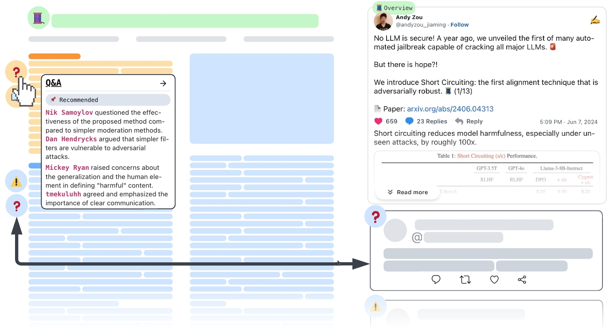
1 Introduction
Academic reading underpins scientific progress. However, research papers are often written in a dense and highly formal style [58] to uphold rigorous standards of accuracy and reproducibility [53]. This creates a substantial barrier, as readers have to invest considerable effort and possess a solid grasp of prior literature in order to unpack and understand a paper [3, 6, 28]. Meanwhile, however, the burgeoning amount of papers being published every day also requires researchers to skim ever faster [51], just to stay current with the expanding literature.
In this fast-moving landscape, the academic community has gradually taken to social media to boost the visibility of their work [72]. Platforms like X1 and BlueSky2 now host vibrant and intellectually engaged communities [36]. Unlike formal publications, academic discourse on social media is informal [2], colloquial [11], and crafted to attract engagement and peer acknowledgment across a diverse audience [10, 15]. To garner attention and engage their audiences, authors use various strategies when sharing papers on social media, such as using relatable examples, personal language, and multimedia [24, 47]. These strategies break down complex concepts into digestible information chunks, which lowers the cognitive load of comprehension and increases interest among readers. This eventually fosters more community engagement and conversation, creating a rich repository of peer insights and interpretations.
However, during reading, researchers are still largely isolated from such social media engagement, as it is hard to find discussions around a specific paper from the torrent of social media posts. This disconnection prevents researchers from fully utilizing the rich peer insights on social media [73]. For instance, a user may encounter a pertinent post about a paper when browsing X and bookmark it for later reference, only to forget it when they eventually sit down to read. Or conversely, they might want to check others’ reactions or opinions on a paper during reading, which they would have to break focus and scour the internet to find relevant discussions. Such context switching is both disruptive and cognitively taxing [12].
To bridge this gap, we explore the design space of integrating peer insights from social media into academic paper reading. This is no trivial task—prior research shows that presenting information across vastly different formats without overloading users requires deliberate design choices [22, 28, 37].
Through a formative study, we examined the potential benefits and pitfalls of combining social media discussions with academic papers. Participants (N=8) recognized various benefits of such integration. For example, social media discussions helped them quickly grasp the main idea of a paper, find related literature, and access diverse perspectives. However, they also highlighted multiple challenges, particularly the mental hurdles of parsing fragmented and noisy social media discourse, as well as the cognitive chasm of switching between the two formats. Based on this feedback, we formulated five design goals to ease the tension between the wealth of informal peer insights and the risk of cognitive overload.
Following the design goals, we developed Surf, a novel paper reading interface that enriches academic paper reading with Social Understanding of Research Findings. Surf offers a range of features to help readers utilize both sources of information effectively: (1) Faceted Linkages connect social media discussions to specific paper sections, enabling seamless transitions across formats. (2) In-situ Discussion Summaries allow readers to preview conversations around specific sections and quickly gauge their relevance and usefulness. (3) Scaffolded Navigation guides readers through research papers in a more structured way. (4) Focus Mode filters out noisy or trivial posts to reduce distractions and fatigue.
To evaluate Surf and understand how informal peer discussions on social media could complement and enrich researchers’ reading experience, we conducted a within-subjects comparative usability study with (N=18) researchers. Our study revealed that Surf helped participants gain a deeper understanding of the paper concepts, stimulating significantly more critical thinking compared to their usual reading practices (p < 0.05). It also significantly improved participants’ self-efficacy in identifying the strengths and weaknesses of the papers. Despite the seemingly overwhelming volume of social discussions, Surf significantly reduces participants’ mental demand and frustration during reading by accommodating their diverse reading strategies. Additionally, participants reported that Surf helped them discover relevant literature and encouraged them to engage with peers on social media, which could foster richer intellectual exchanges and contribute to a more connected academic community on social media.
Our paper highlights two design imperatives for future systems that combine information spaces with sharply different density, tone, and formality. First, cultivate trust: informal or anonymous sources carry little default credibility, so users hesitate to invest effort in them. Second, while conversation threads are great for debate, their nested structure impedes just-in-time comprehension; interfaces should therefore distill branching chatter into linear, skimmable storylines that readers can process in sync with the main text. These insights could inform many emerging use cases that fuse sources of differing density or tone for richer reading, e.g., a newsreader integrated with real-time social media reactions, an online lecture platform augmented with students’ live chat, etc.
More specifically, our paper makes the following contributions:
- A pipeline for collecting relevant social media discussions around any paper, then distilling, filtering, and mapping each discussion to the corresponding section in the paper.
- A formative study with (n=8) researchers that revealed five design goals for efficiently combining research papers with informal peer discussions on social media.
- We developed Surf, a novel paper reading interface allowing fluid exploration of the paper and its online discussions while minimizing cognitive load.
- A within-subject usability study with (n=18) showing how Surf significantly deepens comprehension, promotes self-efficacy, and lowers mental demand, compared to researchers’ current reading practices.
2 Related Work
To understand the current landscape of support for academic social media and paper augmentation, we reviewed the literature on the following topics: an exploration of the academic social media space, collaborative annotation and sensemaking, and tools that augment research paper reading.
2.1 Academic Discussion in Social Media
With the increasing use of social media for academic discourse, researchers have examined the role of platforms like Twitter (now X) in facilitating informal science communication and learning [2, 11, 61]. There are several key benefits of social media discussion in the context of academia, such as the ability to present research in digestible formats, reach a more diverse audience, and provide additional context and opinions beyond the formal publication process [10, 11, 14, 24, 59]. Additionally, social media discussions foster a more interactive and collaborative environment, where researchers can increase exposure on their work, receive immediate feedback, and engage in real-time conversations [17, 38, 66]. Recent work has explored various strategies employed by academics to engage peers and gain visibility. For instance, a tweetorial is a structured series of posts that walk through an academic idea or paper in an accessible and engaging manner [9, 24]. Tweetorials give researchers the opportunity to provide explanations, personal reflections, and contextual insights for their work that might be omitted in formal venues [47]. Prior work has found that this kind of storytelling strategy on social media can help communicate scientific content more effectively for both experts and general audiences [24]. Platforms like Twitter are also becoming vital spaces for real-time academic conversation and exchange, especially during conferences. Studies analyzing backchannel activity and conference hashtags show that social media enables rapid idea dissemination and ongoing commentary beyond the physical or temporal limits of the events themselves [46, 57]. These discussions reflect a shift in science communication towards informality and openness, where platforms like X serve as a forum for collaborative knowledge sharing.
Despite these numerous benefits, the unstructured and ephemeral nature of social media discussion posts poses challenges for integrating them alongside academic processes. Posts and comments are scattered across threads and are detached from their source material, making them difficult to retrieve and follow over time [73]. While some researchers actively seek out academic discussion on Twitter [15], doing so requires effort and prior knowledge of where to find them. Other researchers also perceive social media like Twitter as noisy, overwhelming in content, lacking scientific validity, and too time-consuming to sift through [15, 45]. There is a growing need to bridge the gap between the rich insight offered on social media and the structured static academic reading experience [73]. With an understanding of the capabilities and challenges of informal academic communication, our work seeks to explore how these peer perspectives can be meaningfully augmented into one place and incorporated into the academic reading experience.
2.2 Benefits of Collaborative Annotation
Prior work has revealed the benefits of peer contributions in learning and critical thinking. Annotation itself is a form of active reading that helps with reflection, deeper understanding, and better idea retention. This experience has been digitized through tools that allow readers to highlight, comment, and engage more actively with text [19, 62, 76]. Collaborative or social annotation, in particular, has been shown to improve reading comprehension by allowing readers to share and build on their peers’ ideas [4, 18, 31].
One key benefit of collaborative annotation is to promote validation and confidence in understanding [7]. Previous work highlights how digital peer acknowledgment, such as affirming comments and likes, can increase perceived value in the discussion, motivating readers to continue contributing their own thoughts and interpretations [31, 41]. Moreover, exposure to others’ interpretations can enhance a reader's understanding of the text, as it introduces new perspectives and clarifications on ambiguous topics [70].
Social media discussion represents a vastly underutilized resource of peer commentary in the academic community. Although not as structured as formal annotation, posts on social media platforms on Twitter summarize, question, critique, and contextualize research [17] in ways that are similar to annotation practices. The rich repository of perspectives can serve as another layer of collaborative annotation, offering dynamic, real-time academic dialogue to supplement academic reading. Previous work has explored strategies to summarize large-scale online discussions to support easier navigation and reader comprehension [74]. Building upon this foundation, our work explores the challenges in the just-in-time augmentation of such peer perspectives in academic reading and investigates the impact on readers.
2.3 Augmenting the Reading Experience for Research Papers
While social media offers valuable peer perspectives that can complement academic reading, designing interfaces that can effectively augment these perspectives to enrich reading is a challenging task. We examine existing tools that augment the paper reading experience by scaffolding comprehension and providing contextual/in-situ support during reading. Some systems enhance papers using multimodal content. For example, Papeos [37] integrates short talk videos next to the paper, allowing readers to supplement their reading by listening to authors’ own explanations. Similarly, ReaderQuizzer [50] inserts comprehension questions throughout papers that prompt critical reflection and learning.
Other systems focus on contextualization and in-situ explanations of the text. CiteRead [60] and CiteSee [13] enhance the citation experience by surfacing important commentary or context from citing papers. Similarly, Threddy [32] and Synergi [33] allow readers to pull inline clips of citations and ideas for their own references. ScholarPhi [28] provides definitions for "nonce" terms and symbols throughout the paper. PaperPlain [3] provides plain language definitions for complex terms and discipline-specific concepts within the text. Spotlights [43] surfaces important text or objects as overlays to help readers maintain context while scrolling. Qlarify [21] dynamically expands a paper's abstract using information from the paper itself. Some other tools like Scim [22] support intelligent skimming by dynamically highlighting important sections and summarizing them. Each system uses visual cues to draw readers’ attention to insightful additional content that complements the text itself.
Surf aims to augment paper reading with peer perspectives from social media. Previous research has touched on how social networks can augment research paper recommendations and discovery processes [34], already demonstrating the value of integrating social elements into academic workflows. In this work, we draw upon the design strategies of prior systems that explore how digital tools can benefit academic literature engagement. While they have primarily focused on contextualization, skimming, and summarization of the paper content itself, our work builds on this space by considering how external discussion from social media can introduce new perspectives and experiential insights from fellow scholars.
3 Formative Study
To explore design opportunities for combining papers and social media discussions, we conducted a formative study with eight researchers: seven doctoral students and one master's student. Five participants worked in Natural Language Processing (NLP), two in Human-Computer Interaction (HCI), and one in Machine Learning. Four participants regularly followed academic discussions on X, Bluesky, and LinkedIn, while the remaining four rarely engaged with such content. Participants read papers at varying frequencies, with five engaging with papers more than 4-6 times weekly.
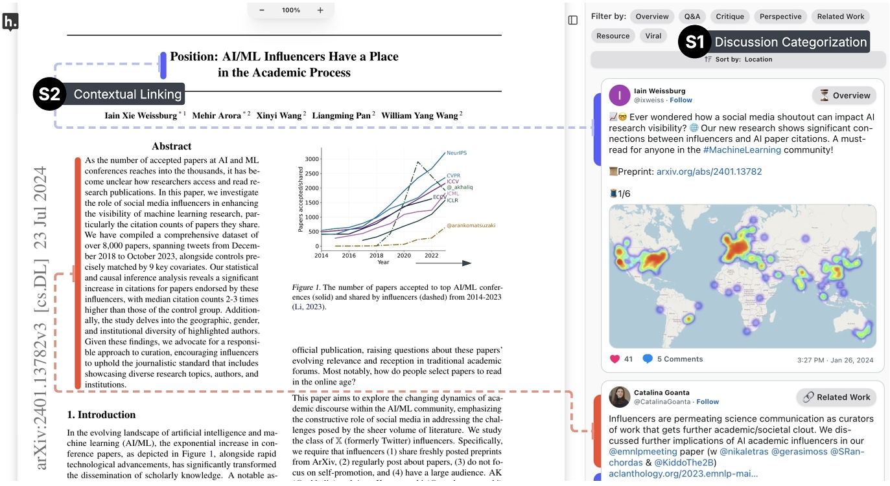
3.1 Technology Probe
Consuming research papers alongside social media discussions is a novel concept that can be difficult for participants to envision. To give participants first-hand experience and enable detailed, experience-based feedback, we built a functional prototype as a technology probe (Figure 2). We selected three papers from each participant's research field (HCI, NLP, and ML) that had at least five discussion threads on X. These papers were sourced from an author's X recommendation feed. One author then collected all relevant tweets for each paper using the method described in §4.3.
In the initial iteration of our design, tweets were simply juxtaposed next to a paper. However, this naive design proved inadequate for eliciting meaningful responses, as participants (N=2) in a pilot study reported significant usability issues, including being overwhelmed by the vast volume of seemingly irrelevant tweets and unable to locate any valuable discussions. Thus, we implemented two basic scaffolding features to make the probe more usable:
S1. Discussion categorization. Threads were organized into eight discussion types: Overview, Q&A, Critique, Perspective, Related Work, Resource, Teaser, and Misc. Appendix A details this taxonomy with definitions and representative examples. Notably, only threads presented in the form of tweetorials [24] are classified as Overview, i.e., a thread of self-replying posts that walks through a research paper step-by-step. This feature enables participants to quickly locate discussions that catch their interest. Two authors iteratively developed this taxonomy using thematic analysis. They independently coded 200 randomly sampled academic tweets and discussed until reaching consensus on eight broader discussion categories. Saturation was reached during this initial coding process, with no new categories emerging in the final 60 samples. The two authors then independently coded another 100 posts and achieved strong agreement (Cohen's κ = 0.888, p < 0.05). Finally, they independently assigned a discussion type to every tweet in the study materials.
S2. Contextual Linking. To help readers navigate between the two formats, we mapped each discussion thread to relevant paragraphs using color-coded highlight bars. These bars appear as paired bars alongside the post and their associated paragraphs. Clicking on a bar next to a post directs readers to the corresponding location in the paper, and vice versa. Each discussion thread is linked to paragraphs (if any) in the paper that have a cosine similarity score above 0.75, based on two text embedding models (mxbai-embed-large-v1 [44, 48] and Specter2 [64]). Similar linking methods have been used in prior work augmenting academic text [37].
3.2 Procedure
Two authors conducted formative studies with eight participants (T1-T8) remotely on Zoom. Each study session lasts around 90 minutes. In the first 15 minutes, we asked about participants’ prior experience with academic social media and their paper-reading habits. Participants then chose their preferred paper from the reading materials (papers pre-linked with social media discussions) and read using the technology probe for 35 minutes. We asked participants to use their cursor to follow along as they read whenever possible. One author observed and took notes of participant behaviors, including lingering cursors, time spent on each discussion, and frequencies of switching between formats. After the reading period, we conducted a 30-minute semi-structured interview that explored the benefits and challenges of having social media commentary alongside the paper, strategies for utilizing both formats, and suggestions for improving the interface. This study was approved by the university's Internal Review Board (IRB).
3.3 Findings
During the sessions, we recorded participants’ screens and audio, which we then manually transcribed. We qualitatively analyzed each transcript.
3.3.1 How do social media discussions complement research papers?. Thematic analysis of the interview data revealed three main benefits of combining research papers with their social media discussions:
Enhancing comprehension. All participants mentioned that reading social media discussion next to the paper helps them easily grasp the “the whole picture of the paper” [T1]. They also pointed out that sometimes posts provide criticism that is “helpful to better understand the caveats or the limitations” [T4] of the paper.
Facilitating content discovery and scholarly connections. Seven of eight participants noted that academic social media helps them find related literature more easily [T2,3], as well as additional resources such as presentations or talk videos of the paper [T1,2]. Many also valued how academic social media enables easier contact with the authors [T2,4,5,8] and peers in their fields [T1–4,6,8]. Additionally, T4 mentioned how formal peer reviews are often inaccessible to the public, and in such cases, social media discussions become “a good complement” because “here everyone can speak”.
Clarifying and Critiquing Research. Three participants [T2, 3, 4] shared that social media content clarifies technical details and helps them probe deeper into the paper. For example, a discussion thread pointed T4 to a false causal claim in the paper that they did not notice initially. T3 noted that social media comments often surface implementation specifics that the paper glosses over: “some people are asking technical details, like the actual implementation or model choice in their experiment”, and that “would be something you get from the comments more than from the paper itself.”
3.3.2 Challenges. Despite these promising benefits, participants also highlighted several challenges when using the probe.
(C1): Finding credible and useful discussions. A majority of participants (5/8) expressed concerns about the credibility and quality of academic discussions on social media. T2 mentioned how “tech bros” and “research influencers” tend to “hype everything up,” making the discussions appear “spammy.” T4 and T8 elaborated on the potential harm of inaccurate interpretations, especially for those with less experience: “Only reporting partial arguments and making them a big deal could influence the public, which I see as a drawback.” [T8]. Participants pointed out that meaningful discussions were often bestrewn amid excessive “noise” [T7]. Interestingly, participants differed in their definitions of what constituted as “noise.” [T1,4,5] perceived sentimental or anecdotal posts as distracting, low-value content, whereas [T2,3,6] viewed them positively: “I particularly enjoy the social part of the social media...as long as that's not the only thing I'm seeing” [T2], because such interactions provided entertainment [T2] and encouragement [T3,6], helping them feel more comfortable engaging with the community.
(C2): Following long discussion threads. 5/8 Participants found social media discussions hard to follow due to their hierarchical structure. [T3,4] expressed that they could not easily locate useful information in lengthy conversations and suggested “flattening” long threads into smaller, coherent chunks. During interviews, two participants realized they had skipped some valuable discussions because these were deeply nested, and “I just don't have the habit of expanding and reading the comment section” [T8], or “because they are very scattered” [T2].
(C3): Overwhelming and distracting presentation. Half of the participants (4/8) criticized the probe for presenting excessive information when clicking on a highlight bar. They found this “distracted [them] from understanding the whole picture” [T1] and created “more cognitive load” to parse through all the comments [T4]. Notably, some participants pointed out that seeing other people's opinions before reading the paper introduced bias [T8] and “limits [them] from forming [their] own understanding” [T4]. Two participants specifically recommended giving readers more control over the content they saw, suggesting that the interface should “let the readers choose what type of discussions they want to read” [T4].
3.4 Design Goals
Participants from the formative study recognized the value of social media discussions for gaining deeper understanding, broadening perspectives, and connecting with fellow researchers. However, they also experienced distraction and information overload when faced with the sheer amount of unorganized, fragmented social media conversations. This duality between perceived value and cognitive burden shows that simply juxtaposing social media discussions alongside papers creates cognitive friction and inhibits readers’ ability to process both sources effectively. Based on these insights, we distilled the following design goals (DGs) for combining social media discussions and research papers effectively:
DG1: Support readers to consume both formats more fluidly. In our formative study, six of eight participants focused solely on the paper and barely regarded the tweets. Prior research [16] and self-efficacy theory suggest that such reluctance could be attributed to the anticipated difficulties in shifting attention from the primary task (reading the paper) to the secondary task (following social media discussions). These include encountering low-quality content (C1), expending increased mental effort to parse social media conversations (C2), and experiencing information overload (C3). To allow for more seamless integration, we therefore aim to surface only the most relevant and valuable discussions and provide contextual links that connect each discussion to the text it references.
DG2: Support diverse reading styles and exploration strategies. Readers employed various strategies to efficiently consume research papers with social media discussions using the technology probe. Some anchored onto discussions first to steer their attention to pertinent content in the paper, whereas others worried that early exposure to others’ opinions would bias their own interpretation (C3). Prior systems, such as Scim [22], accommodated users’ varied cognitive styles by offering more control and flexibility. Similarly, our goal is to let readers decide when and how social media discussions are integrated into the paper, and to offer dynamic options that support efficient navigation across both formats.
DG3: Structure discussions to improve readability and visibility. Participants struggled to follow discussion threads in their original hierarchical structure (C2). Many noted that insightful dialogues were often scattered and deeply nested in the comments. This observation aligns with previous work [54], which revealed that most academic conversations on X branched into multiple subthreads (“Bifurcation”) rather than building upon a central post. For example, when a new paper is announced in a root post, users often respond with questions and feedback, each of which then spawns into its own line of conversation. These branching subthreads, while valuable, are easily overlooked by readers [73] as they were buried deep in the tree. As such, we seek to restructure social media discussions to enhance readability and surface valuable exchanges.
DG4: Build trust in informal social media discussions. Participants expressed concerns about the quality and credibility of academic conversations on social media (C1). Prior studies found that frequent exposure to noisy or irrelevant content causes fatigue and pushes users away from social media altogether [8, 16, 25, 56]. This calls for a design that highlights valuable discussions, increases knowledge density, and cuts away excessive noise to make reading social media discourse rewarding. Moreover, participants desired the ability to adjust filtering thresholds (C3) based on their personal definitions of “noise” (C1). Finally, we aim to provide implicit cues that allow readers to judge the credibility of discussions at a glance.
DG5: Minimize visual distraction and cognitive load. Participants identified several design elements that caused distraction and confusion when using the probe. A common criticism concerned how the discussions are arranged: T3 were confused that “tweets do not come in the order of how the paper is organized”; Two participants disliked seeing the discussions all at once right upon reading, calling it overwhelming and “intrusive” [T4]. Another source of distraction came from the visual design: T1 noted that the highlight bars could mislead the importance of a paragraph and divert attention from adjacent text (C3), while three participants found the bars’ bright, saturated colors visually disruptive. These findings prompt us to refine the interface's affordances and signifiers so they are less visually intrusive and reduce cognitive disruptions.
4 SURF
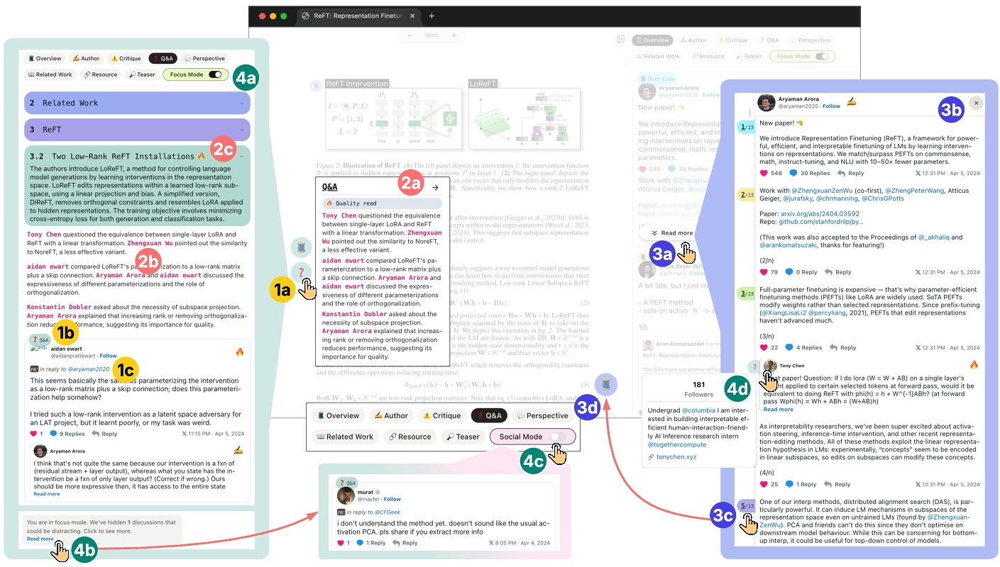
We developed Surf, a novel interface that enriches academic paper reading with Social Understanding of Research Findings by contextualizing peer insights from social media. This section presents its key features, interactions, and implementation details.
4.1 Overview of Surf
Surf interface is split into a working area displaying a research paper on the center-left of the screen and related social media threads in a right-hand panel (Figure 3). Each thread is linked to a specific section in the paper, and linkages are signaled by icons (). These icons represent one of eight discussion types (§3.1), allowing readers to quickly identify the nature of each thread. Users can seamlessly navigate between formats: clicking an icon within the paper direct readers to the corresponding social media discussion, while clicking an icon next to a tweet scrolls the paper to the related section. This bidirectional linkage enables fluid exploration between the paper and social media discussions (DG1). The system employs consistent color coding and symbols to help readers establish intuitive visual connections between threads and their corresponding sections (DG5).
In the right panel of social media posts, the top part allows users to filter different discussion types using tab-like buttons. Each button reveals posts within the selected category, which are then grouped into sections that match the paper's structure in an accordion-like layout. For instance, when a user selects the Q&A category, Surf reveals all paper sections containing Q&A tweets as collapsed section bars. Expanding a section bar reveals the relevant tweets within that section. This progressive disclosure design limits the amount of information presented at once, preventing users from feeling overwhelmed (DG5).
4.2 Key features
Figure 3 breaks down the Surf interface and highlights the workings of the four key features. We use the alphanumeric indicators to explain how each feature works in this section.
4.2.1 Faceted Linkage. To accommodate distinct cognitive and reading styles (DG2), prior systems [22] suggested giving readers greater flexibility in using the interface. To this end, Surf adopts a faceted approach, placing visual indicators (i.e., the linkage signifier ) representing each discussion type right next to the section titles. Clicking a linkage signifier filters the right-hand panel to display only threads of the selected type associated with that specific section. Likewise, clicking on the color-coded linkage tag above each tweet/thread automatically scrolls the viewport to the linked paragraph, enabling readers to seamlessly transition between the two content formats (DG1). To minimize visual distraction, the signifiers use low-saturation background colors and display intuitive icons for each discussion type instead of full-text labels (DG5).
This faceted linkage provides readers the flexibility to access the needed information at the right time, right place, in the right amount, and in turn supports diverse reading strategies (DG2) while reducing cognitive burden (DG5). For example, readers who prefer building their understanding independently can start with the paper itself and later validate their interpretations by jumping to the linked social media discussions; whereas a curious reader could also first explore how others debate over a section (e.g., Q&A, Critique) by exploring the threads before diving into the paper content.
4.2.2 In-situ Narrative Summary of Social Media Discussions. The challenges in contextualizing intricate academic literature within short-form social media conversations were emphasized both by formative study participants and prior research [73]. Similar augmentation systems [22] recommended providing contextual support directly within documents to aid readers in comprehending content that is otherwise difficult to follow [3]. Building on these insights, we embedded in-situ summaries of related social media discussions alongside their corresponding sections in the paper. These summaries appear on demand when users hover over a linkage signifier located next to a specific section , bridging the cognitive chasm between the two formats. They allow readers to preview ongoing discussions around specific sections and quickly gauge whether they are relevant and useful before engaging further. By reducing the uncertainty in switching contexts [12], this feature encourages users to consume the two formats more fluidly (DG1). Below, we illustrate this feature with a fictional usage scenario:
As readers go through a paper, they may have doubts about the methodology. To confirm their concerns or seek clarifications, they can hover over the Q&A signifier () adjacent to the methodology section to see a tooltip-like component with a concise summary of the key insights from all Q&A threads linked to this section . The summary is written in a narrative way that captures the back-and-forth exchanges between users—for example, “User A questioned X, and User B countered User A's opinion by arguing Y.” By reading this summary, readers can quickly get the gist of the conversation and decide whether to read more. If they wish to explore the discussions further, they can click on the linkage signifier to expand the corresponding accordion in the right-hand panel . From there, readers can scroll through each Q&A thread, find relevant ones, and click to read the full thread. Furthermore, each summarized claim is made easily verifiable via attribution to the source post. Clicking on the username in the summary associated with each claim will direct readers to the exact post in the conversation where the claim was made (DG4, DG1).
These summaries are also displayed in their respective section bars . When readers expand a section bar, the corresponding summary shows up above the tweets and serves as an index to guide readers to discussions of interests. However, as readers sift through the tweets, they may gradually lose sight of the paper's content or struggle to recognize the relevance of the ongoing discourse. Surf therefore synthesizes essential context from the paper and explicitly explains how the discussions relate to the corresponding section (DG1), e.g., how people are questioning, contrasting, or agreeing with specific parts in the section.
4.2.3 Unraveling Branching Conversations into Linear Subthreads.
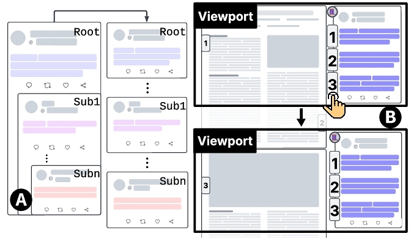
Nelhans et al. observed that academic discussions on social media rarely progress in a single direction [54]. Instead, an initial post branches into multiple distinct lines of conversations (subthreads). These branching subthreads contain insightful exchanges but can be easily overlooked by readers [73]. To improve readability and content visibility (DG3), Surf identifies such bifurcations within discussion threads and extracts each branch as a standalone linear subthread. Specifically, Surf detects significant shifts in topics, the paper section being discussed, or discussion dynamics, and marks this shift as the start of a new branch. For instance, when a conversation shifts focus from the methodology to analysis results, or transition from Q&A to Critique. To maintain coherence, all branching subthreads still appear as comments under their original root posts but are simultaneously displayed as independent subthreads. As shown in , these standalone subthreads include a pointer linking back to their root threads (“in reply to @...”). Hovering over this pointer displays a tooltip previewing the original root post.
4.2.4 Scaffolded Navigation via Overview threads. The threads in overview category are organized as tweetorials, a common format in academic social media [24], where a series of self-replying tweets guides readers through a research paper section-by-section. Each tweet in a tweetorial builds upon the previous one and explains dense academic literature in a more accessible, engaging, and colloquial manner, using illustrative examples, personal insights, and casual narrative language. Prior studies have shown that tweetorials not only help with digesting academic content, but also encourage engagement in such science communications [9].
Surf leverages this format to give readers a more structured way of navigating research papers. Initially, only the first tweet in an Overview thread is shown with a “Read more” button at the bottom, signaling additional content . Clicking this button opens the thread in a modal () where each tweet is linked to the most relevant paper section and tagged with a sequential label (e.g., #/N) to indicate its position in the thread . Each numbered tag uses the same color-coded background as its corresponding linkage signifier to indicate their connections. Clicking on a tag scrolls the paper view to its related section in the paper , allowing readers to quickly skim key points in the paper and form a mental map of the content (DG1). Furthermore, the Overview signifiers distributed throughout the paper offer readers convenient access to these tweetorials for alternative, easier-to-consume explanations.
4.2.5 Quality Mechanisms. The spontaneous nature of short-form social media platforms inevitably proliferates vast amounts of noisy, trivial content. Exposure to such pervasive noise can result in reader fatigue, frustration, and ultimately avoidance of social media usage [75]. Our formative study participants revealed perceptions of what constitutes noise vary among readers: content considered entertaining or insightful by one user may be distracting or irrelevant to another (DG4). Surf aims to provide adaptable filtering mechanisms that effectively minimize noise while respecting individual readers’ preferences and allowing them to navigate discussions according to their own terms.
To this end, Surf assigns a quality score to social media posts based on the extent to which they contribute to (a) deepening readers’ understanding (b) broadening their perspectives, and (c) vitalizing dry, dense academic literature. Recognizing diverse user preferences, Surf offers a toggle between two viewing modes: Focus Mode and Social Mode. Some low-quality posts are hidden under Focus Mode, whereas Social Mode offers a less filtered view of discussions . Following existing social media content moderation guidelines, certain tweets are always filtered out, e.g., those identified as NSFW, harmful, or offensive.
In addition to filtering, Surf incorporates visual cues to assist readers in quickly judging the quality and credibility of posts. For instance, particularly insightful discussions are marked with a fire icon and labeled “Quality Read” to signal valuable contributions. Research also suggests that social media users rely on heuristic cues such as professional background and institutional affiliation to assess credibility in online discussions [20, 52]. Thus, Surf displays a user's X profile including their bio, links, and affiliations in a tooltip when readers hover over usernames or avatars .
4.3 Implementation
Surf’s frontend is developed with Next.js in approximately 4,000 lines of TypeScript and CSS. The PDF and overlaying UI elements are rendered using the open-source pdf-component-library3 [49]. To ensure consistency with X's interface, we used the react-tweet4 package to render tweets. The entire backend, including components for gathering related tweets and parsing papers, as well as the LLM-based processing pipeline, was implemented in around 2,500 lines of Python code. We used Gemini-1.5-pro for all natural language processing tasks for its capability in handling long context. We adhered to all X's terms of service as described in Appendix D.
4.3.1 Data Preparation. Surf gathers relevant discussions around a given paper by searching its identifiers (e.g., arXiv ID, DOI) via X's API. To ensure comprehensive coverage, Surf also searches on Google as X's search API does not always yield complete results. For each paper, Surf uses GROBID [1] to parse the PDF and extract structured content, including authors, paragraphs, figures, tables, and section headers, along with their coordinates within the document. The coordinate information is then used to position overlay elements like the linkage indicators on the PDF.
4.3.2 Data processing. We describe Surf’s data processing pipeline below. All tasks are carried out by Gemini-1.5-pro LLM using the chain-of-thought prompting method [71]. Details and the exact prompt used for each component can be found in Appendix E.
- Step 1: Filtering relevant discussions.
Surf examines every discussion thread and discards those that only mention the paper in passing. It then identifies valuable branching subthreads that drift away from the original conversation through a depth-first search of all potential branches.
- Step 2: Classifying discussion types. Step 1 organizes conversations into coherent branches that follow a coherent line of discussion. Surf then categorizes each branch into one of the eight discussion types, following the taxonomy in §3.1.
- Step 3: Mapping discussions to paper sections. Each branch is mapped to the most relevant section in the paper based on two criteria: (1) the section is explicitly referenced in the conversation, or (2) the section provides essential background that helps readers understand and follow the conversation.
- Step 4: Summarizing and contextualizing discussions.
Surf summarizes key insights from the discussions linked to each section. It is instructed to mirror the back-and-forth exchanges between users when writing the summary, helping readers follow who said what and why. To ensure verifiability and reduce hallucinations, Surf requires the LLM to include the tweet ID of the source post for every claim in the summary. Additionally, Surf synthesizes essential background from the corresponding section to help readers contextualize the discussion within the paper content.
- Step 5: Evaluating discussion quality. Finally, Surf rates how much each social media post adds to the paper and assign a quality score between 0 and 1. The LLM is prompted to filter out as many noisy, trivial, or distracting posts as possible.
We provided few-shot examples for Steps 1 and 2, drawn directly from the annotation data used in our formative study (§3). We used the DSPy [35] framework to programmatically optimize the prompts via the MIPROv2 teleprompter [55], which selects the most effective few-shot examples, refines instructions, and ensures a consistent output structure. For the remaining steps, we used zero-shot prompting, leveraging Gemini-1.5-pro’s advanced reasoning capabilities. Given the unpredictable variability in social media conversations, a model guided by clear zero-shot instructions can more flexibly adapt to diverse cases and avoid overfitting to narrow patterns in few-shot examples. Detailed pseudocode and prompts for all five steps are provided in Appendix E. An evaluation against human experts shows that all five steps in our LLM-based pipeline achieve satisfactory performance for reliable prototyping. Detailed evaluation results are reported in Appendix F.
5 Usability Study
While participants recognized the various benefits of integrating social media discussions into paper reading, they also noted critical challenges that must be addressed for such designs to be practical. To evaluate whether Surf enables users to utilize both information sources effectively, we conducted a within-subject comparative usability study with 18 participants. We compared Surf (treatment) against the browser's built-in PDF reader (control) in two separate sessions. In each session, participants chose a paper from 12 pre-processed reading materials, read the paper, and composed a mini-review where they identified one key strength, one major weakness, and one critical question about the content. Participants had access to online resources as they normally would in both conditions. Two authors analyzed their task performance and self-reported efficacy to evaluate their comprehension of the paper. Through this study, we sought to answer the following research questions (RQs):
- RQ1: How does Surf affect participants’ comprehension of research papers?
- RQ2: How does Surf facilitate participants’ exploration across the two formats?
- RQ3: Beyond reading, how does Surf influence discovery and community engagement?
Upon completion, participants were compensated $40 for their time. The study procedure was approved by the university's Institutional Review Board (IRB).
5.1 Reading Materials
We collected papers from recent proceedings of major machine learning conferences (ICLR, ICML, NeurIPS, ACL). To evaluate Surf’s effect and whether it mitigates the distraction and information overload seen in our formative study, we randomly sampled 50 papers, each with at least 10 discussion threads on X. Appendix C confirms that many papers exceed this threshold and that our usability study results should generalize well beyond this sample. To capture the natural dynamics of social media conversations around academic papers, we intentionally did not control the quality of discussions associated with the sampled papers. This allowed us to test Surf in a more realistic, less controlled setting to elicit genuine user reactions that are representative of real-world scenarios.
Out of the 50 paper candidates, we selected 12 NLP papers of comparable difficulties that correspond to the following topics: (i) four technical papers on fine-tuning methods, (ii) five papers on empirical studies on LLM capabilities, (iii) three technical papers on optimization techniques.
5.2 Baseline
Our primary goal is to evaluate the effect of Surf on researchers’ current reading practices. All 26 participants reported that they rarely consulted social media during reading, instead focusing primarily on the paper content itself. This informed our decision to use a plain PDF reader with ad-hoc access to online resources as the baseline for comparison, because it most accurately captures the real-world reading practices. An alternative treatment could display raw tweets alongside papers without Surf’s design interventions. However, this (1) compromises ecological validity as it forces unnatural user behavior, and (2) contradicts preliminary evidence from §3.1, showing that presenting unorganized tweets causes significant cognitive friction and hinders reading. Using this treatment as a baseline would make it impossible to isolate Surf’s contributions, as we cannot distinguish whether any improvement stems from Surf’s design, or simply from avoiding the cognitive burden of parsing noisy, fragmented social media content.
5.3 Participants
We recruited 18 participants with academic research experience through convenience and snowball sampling. Among the recruited participants, 16 were doctoral students, one held a Master's degree, and one completed a postdoctoral position. Participants worked across various research fields: seven in HCI-related areas (e.g., Human-centered AI, CSCW), six in NLP, and five in Machine Learning more broadly. Ten participants were in their early stage of research with less than three years of academic experience, while the remaining were experienced researchers, including seven senior PhDs and one research scientist in the industry. Participants also reported different levels of activity on academic social media: nine actively engaged by posting or commenting, seven regularly followed academic content without engaging, and two did not use social media for academic purposes at all. All participants found reading materials comfortable. Detailed demographics information can be found in Appendix B.
| 1 | 2 | 3 | 4 | 5 | |
| Soundness | Inaccurate interpretations or unrelated to the paper's focus | Mostly accurate but not valid for central arguments | Accurate with some valid points tied to the paper | Mostly valid analysis but weakly connected | Sound and well-supported reasoning centrally linked |
| Cognitive Depth | Verbatim repetition of paper content | Paraphrasing with surface-level insight (DOK-1) | Basic analysis and general observations (DOK-2) | Strategic thinking grounded in content (DOK-3) | Critical thinking with reasoning and hypotheses (DOK-4) |
| Insightfulness | No original ideas; repeats the paper | No originality; mirrors social media points | Partially original; built on social media ideas | Original insights absent from discussions | Novel and insightful perspective beyond known discourse |
5.4 Procedure
Two researchers conducted the studies remotely. Each participant experienced the control and treatment conditions in two separate sessions, each lasting approximately 75-90 minutes. To reduce carryover effects and minimize fatigue, the two sessions were scheduled at least 24 hours apart. To control for potential order effects, we employed a within-subjects design with counterbalanced condition order. Half of the participants encountered Surf in their first session, while the other half encountered Surf in their second session. Each session (control and treatment conditions) included four activities: warm-up, paper selection and reading, review, and a reflective interview.
During the 10-minute warm-up, we asked participants to share their research background, social media usage, and paper reading habits. In the control condition, after the warm-up, participants move on to the paper selection and reading activity. However, in the treatment condition, participants received a five-minute tutorial on Surf, followed by five minutes to explore the interface. After addressing any confusion, participants were given 45 minutes to read a paper they selected from a set of 12. We ensured that they chose a paper they had not read before. This 45-minute duration was based on our formative study, where participants reported a median reading time of 30–45 minutes for sufficient comprehension. After reading, participants completed a reflection activity where we asked them to identify the paper's main strengths and weaknesses and pose one critical question to the author. This simplified review task was designed to assess their comprehension and critical thinking. Participants were given a 10-minute period to complete the review and refer back to the interface (control or treatment) if needed. After finishing the reflection activity, participants went through different survey/interview activities depending on whether they were on their first/second session (day). If it was the participant's first session, they completed a post-task survey evaluating their confidence and comfort with the task, followed by reflecting on their experiences of the session in a short interview. If it was their second session, they filled out a comparative survey (in addition to the post-task survey) where they evaluated Surf against the control condition. Then, we conducted a 20-minute semi-structured comparative interview to ask open-ended questions about participants’ overall experience and perceptions of Surf. These sessions were recorded with participants’ consent, de-identified, and transcribed for qualitative analysis.
5.5 Measures
We measured participants’ understanding of the papers using two proxies: (i) the quality of their reflection activity and (ii) their self-reported confidence and ease in completing the review task.
5.5.1 Quality ratings of the reflection activity. Two authors—both NLP experts with peer review experience—evaluated the quality of the written reviews. For each review, they first read the paper and its associated discussions then rated the review on a five-point scale across the following dimensions:
- Soundness: Whether a review raises accurate and valid points regarding the paper's central argument.
- Cognitive depth: The level of critical thinking demonstrated in a review, based on Webb's Depth of Knowledge framework [29].
- Insightfulness: Whether a review offers an original and novel perspective on the paper.
To establish agreement on the review rating rubric, two raters conducted three rounds of discussion and evaluation while being blind to the experiment conditions and participant IDs. In the first round, they independently assessed a sample of four reviews, discussed their evaluations, and reached an initial consensus on the rating guidelines. In the second round, they independently rated five additional reviews, yielding Krippendorff's alpha [40] scores of 0.547 for soundness, 0.858 for cognitive depth, and 0.787 for insightfulness. Based on these moderate to substantial agreement levels, the researchers developed a detailed evaluation rubric (see Table 1). Note, the insightfulness dimension captured whether a review's main points had already been mentioned in the social media discussions. For example, scores below 2 indicated that a review was very similar to existing discussions, while a score of 3 suggested that its major points were derived from or built upon existing social media discourse. In the final round, using the finalized rubric, the two raters independently evaluated all reviews (N=36) without access to any additional information (e.g., experimental condition or participant ID). This resulted in Krippendorff's alpha scores of 0.519 for soundness, 0.696 for cognitive depth, and 0.594 for insightfulness. The final score for each review in each dimension was calculated as the average of the two raters’ ratings.
5.5.2 Self-efficacy ratings. Following each session, participants completed a post-task survey assessing their self-efficacy in performing the paper review. Using a seven-point Likert scale, they rated how confident they felt in identifying the paper's strengths, weaknesses, and broader implications. They also rated the overall ease of completing the review task. To measure perceived cognitive load, we included relevant items from the NASA-TLX questionnaire [27], excluding the physical demand dimension. After the second session, we extended the survey to include comparative questions that prompted participants to reflect on their experiences with both interfaces (control vs. treatment).
5.5.3 User Interaction Data. We collected participants’ activity logs to capture participants’ interactions, including time spent on reading and review tasks and frequency of feature use—such as hovering over discussion summaries, switching views, toggling focus mode, and using scaffolded navigation.
5.6 Analysis
5.6.1 Quantitative analysis. We used linear mixed-effects models5 [23] to evaluate the impact of Surf on participants’ review quality scores across three dimensions (soundness, cognitive depth, and insightfulness), with the experiment condition (Surf versus regular interface) as a fixed effect and participant variability as a random effect. Condition order was also included as a fixed effect to control for potential learning or fatigue effects across sessions. Additionally, we modeled paper ID as a random effect to account for the inherent differences in paper content and its associated discussions, given that we did not control for discussion quality when selecting reading materials. We used similar models to measure the effect of Surf on participants’ self-efficacy and NASA-TLX ratings.
| Condition ( |
Order | |||||
|
|
Control | p-value | β | t-value | p-value | |
| Quality ratings of mini reviews (1-5) | ||||||
| Soundness | 4.25 (0.93) ↑ | 3.69 (1.06) | 0.036* | 0.56 ± 0.23 | t(16.0)=2.28 | 0.271 |
| Cognitive Depth | 3.72 (1.14) ↑ | 3.19 (1.00) | 0.045* | 0.48 ± 0.22 | t(14.6)=2.19 | 0.129 |
| Insightfulness | 3.03 (1.02) ↑ | 2.5 (0.95) | 0.046* | 0.53 ± 0.24 | t(16.0)=2.17 | 0.227 |
| Self-efficacy in identifying... (1-7) | ||||||
| Strength | 5.88 (0.60) ↑ | 5.18 (1.19) | 0.020* | 0.75 ± 0.31 | t(32.5)=2.44 | 0.341 |
| Weakness | 5.94 (0.83) ↑ | 5.06 (1.25) | 0.011* | 0.95 ± 0.33 | t(16.5)=2.87 | 0.299 |
| Implication | 5.35 (1.17) ↑ | 4.94 (1.39) | 0.144 | 0.58 ± 0.38 | t(15.3)=1.54 | 0.381 |
| Task Ease | 5.94 (0.75) ↑ | 5.06 (1.09) | 0.007** | 0.94 ± 0.30 | t(16.0)=3.12 | 0.590 |
5.6.2 Qualitative analysis. One researcher de-identified and cleaned the transcript after each interview. Two researchers then independently applied open coding to the transcripts and discussed after each interview to resolve disagreements and refine the codebook as the analysis progressed. This process yielded 144 distinct codes. For each research question, they conducted a thematic analysis [69]. The final Code Book and Thematic Analysis for each RQ are available in the supplementary material.
6 Results
All 12 pre-processed reading materials were chosen by at least one participant, with 10 unique papers selected in the control condition and eight in the treatment condition. All participants confirmed that they had not previously read the chosen papers and reported being comfortable reading them (μcontrol=5.53, μtreatment=6.06, on a seven-point scale). Since the reading materials were randomly sampled and participants were free to choose any papers to read, we posit that the results of this usability study are representative of real-world scenarios.
6.1 RQ1: Surf helps participants understand research papers
Our quantitative analysis of participants’ task performance and survey responses shows that Surf fosters a deeper understanding and enhances readers’ self-efficacy in critically analyzing research papers. A thematic analysis of interview transcripts also confirmed this, showing that Surf validates participants’ opinions and broadens their perspectives, which together bolster their confidence.
6.1.1 Surf fosters deeper understanding. We used a linear mixed-effects model to examine the effect of Surf on the quality of participants’ written reviews, which served as a proxy for their level of understanding of a paper. The model accounted for the order of experiment conditions, differences among participants, and the variability in paper content and its associated discussion quality. As shown in Table 2, reviews in the Surf condition exhibited significantly higher soundness (p=0.036*, β =0.56), deeper levels of thinking (p=0.045*, β =0.48), and were more insightful (p=0.046*, β =0.53) than in the control condition. The presentation order of conditions had no significant effect on review quality, and we observed negligible variance among participants and the specific paper/discussion pairs they selected.
In the interview, 17 participants explicitly stated that Surf improved their understanding of the paper, as “comments on social media provided information that is not included in the paper”, offering “more clarification” [P10]. 11 participants noted that reading discussions alongside the paper revealed new weaknesses pointed out by“authors of the paper” [P8] and others, which they overlooked initially [P7,15]. Moreover, five participants remarked that Surf helped them grasp papers of unfamiliar topics more easily by providing accessible community explanations, as many basic, “naive questions” [P1] have already been asked and answered on social media. As P6 put it:
- “Whenever you start a paper and the topic is new for you, then you might have silly questions about the paper... those naive questions can also be your questions. So, it would be beneficial if you had both expert questions and naive questions together.”
6.1.2 Surf increases participants’ self-efficacy in critically analyzing research papers. As another proxy for measuring participants’ comprehension of research papers, we evaluated their perceived ease and confidence in interpreting the reading materials under both conditions. We used a similar linear mixed-effects model to compare self-efficacy ratings across the two conditions. As shown in Table 2, participants reported significantly higher self-efficacy when using Surf for identifying the strength (p=0.02*, β =0.75) and weakness (p=0.011*, β =0.95) of a paper. Overall, participants found it significantly easier to complete the review tasks with Surf (p=0.007**, β =0.94). All effects were statistically significant, except for identifying the broader Implication of research papers (p=0.144, β =0.58). Likewise, presentation order did not have a statistically significant impact on self-efficacy, and only minimal variance was observed among participants and reading materials.
During the interviews, 12 participants expressed that Surf increased their confidence in completing the review tasks. 11/18 participants noted that reading the ongoing discussions often validated their own concerns or interpretations, which in turn bolstered their confidence and interests in reading. Notably, it was not just the experts’ insights that proved helpful. Participants also found value in seemingly naive contributions, such as simple clarification questions. As P1 explained, seeing these “naive comments” provided a sense of self-validation: knowing that others have also asked similar questions made them feel more assured and less self-conscious—“the fact that it has their questions show kind of where the level of naivete is. That necessarily makes me feel like it's not a dumb question.”
6.1.3 Surf stimulates critical thinking but does not necessarily inspire novel ideas. Figure 5 compares the distributions of quality ratings across three dimensions. Results indicate that Surf guided participants toward more accurate interpretations, boosted the median rating for Soundness by 0.75 points, and enabled 16 participants to formulate reviews that covered “Mostly valid points” (level 4). Surf also stimulated deeper reflection, increasing the median ratings for Cognitive Depth by one point. Notably, four participants exhibited critical thinking in their reviews, compared to only one in the control condition.
In the interviews, participants confirmed that Surf encouraged them to engage in “critical thinking.” 11 participants recalled encountering contrasting viewpoints that prompted them to reflect on their initial interpretations, during which they challenged and rejected others’ opinions, or leveraged these diverse perspectives to refine their understanding of the subject matter. For example, P9 said opposing views “make [them] think about why [they] did not agree. Why [they] think what they are saying might be wrong. It made [them] think more deeply about the reasoning behind it.”
However, Surf had minimal effects on inspiring novel ideas. Even with Surf, the average and median ratings for Insightfulness remained around level three, indicating that participants’ reviews mostly expanded on existing social media discourse, rather than introducing original and novel contributions. In short, while exposure to peer insights on social media encouraged deeper analytical thinking, it did not necessarily trigger novel ideas.
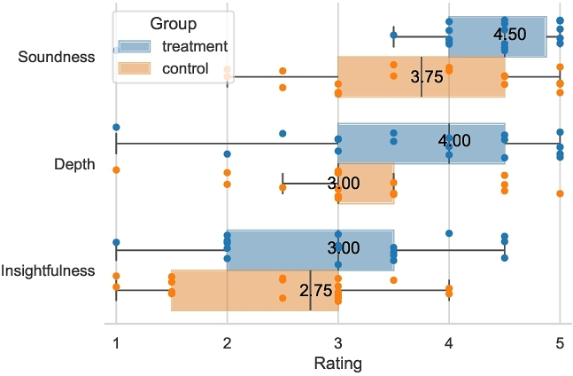
6.2 RQ2: Surf supports fluid exploration across papers and discussions
Our initial formative study highlighted a costly cognitive chasm between consuming disorganized social media conversations and structured academic literature. Quantitative analysis of interaction logs and NASA-TLX responses in the usability study revealed that Surf effectively alleviated these challenges and allowed participants to utilize the two sources fluidly. In the interview, participants also reported that Surf facilitated content digestion and supported their reading habits while imposing little distraction or cognitive strain.
| Condition | Mental | Effort | Frus. | Temp. | Perf. | ||||||||||
| Control |
|
|
|
|
|
||||||||||
|
|
|
|
|
|
|
||||||||||
| p-value | 0.036* | 0.167 | 0.004** | 0.185 | 0.345 | ||||||||||
| β | -0.737 | -0.284 | -0.833 | -0.321 | 0.167 |
6.2.1 Surf enables participants to seamlessly integrate both content formats with minimal cognitive load. We used a linear mixed-effects model to measure the effect of Surf on participants’ perceived task load while controlling for experiment order, individual differences, and variability in paper content and discussions. Results in Table 3 show that Surf significantly reduced participants’ mental demand (p=0.036*, β =-0.737) and frustration (p=0.004**, β =-0.833) in reading research papers. It also tended to reduce perceived temporal demand and effort while boosting perceived performance, although these results were not statistically significant.
We observed that all 18 participants actively switched between the paper and social media discussions in Surf, averaging 12 times per session. This frequent interweaving speaks to the seamless integration of insights. Eight participants noted that Surf made it “much easier” to consume both formats by offering filtered, relevant streams of social media discussions. In contrast, they often felt overwhelmed when using social media on their own, due to “many different opinions, and having to put in the work to figure out what makes sense and what doesn't” [P9]. Surf offered the “convenience of having all [related discussions] in one place” [P4,12] and “facilitated finding more discussion within social media itself” [P8].
The interaction log revealed that seven out of 18 participants briefly toggled off Focus Mode during reading but soon returned to using it (see Table 4, Toggle On/Off). When asked about the most helpful features, six of them specifically mentioned Focus Mode, saying it reduced distraction and filtered out comments they didn't enjoy. Interestingly, P17 was initially hesitant to use it because “[he didn't] want to be censored”, but later acknowledged that he “ended up using Focus Mode more because [he] realized that it indeed filters out the posts that [he didn't]t like”.
Eight participants found it easier to validate the credibility of social media posts with Surf, thanks to the hover-on profile feature. P4 mentioned using “author names as the 1st filter” to identify which tweets to read in depth. Likewise, P14 leverages information in the profile, such as the institution or job position as a “metric” to estimate content quality. As P2 put it, “...the feature to see who the author is pretty useful! If the person is a prestigious professor at a university, I would have more credibility with him. But if it's just a random user, I think I'll just tend to trust him less.”
Overall, participants found Surf’s design “intuitive” [P15] and easy to use (7/18). Three participants described icons and different tab types as “non-intrusive” [P17], “interactive” [P2] and “easy to follow” [P9] while reading the paper.
6.2.2 Surf facilitates various exploration styles. Compared to the sequential consumption pattern seen in the formative study, participants exhibited more integrated usage with Surf, alternating between the two formats about 12 times per session on average. Notably, 15 participants used the faceted linkage feature to navigate between related tweets and corresponding sections, as shown in Table 4. The in-situ summary feature also helped bridge the costly context-switching gap, as participants noted that these summaries obviate the need for “going deep into the conversations” [P18] and assist in “filtering and prioritizing helpful discussions” [P4]. This feature was used by 16 participants six times on average.
We observed participants explore papers in diverse ways. Some began by scanning social media discussions to identify which parts of the paper to focus on. Surf supported this strategy by mapping each discussion to specific paper sections (e.g., Author names to Author category). For example, P13 started with the Overview thread, reading its discussions in depth before scanning the paper for relevant figures and tables. They explained:
- “Especially for the introduction and the results, people have very good discussions, and they put a very valuable context. So, when I read those discussions, I knew what parts I should focus more on in the paper. Because there are many figures in the paper, and you don't know which ones are the most important or the most controversial ones.”
In contrast, some participants preferred to first read the paper and only then turn to the social media discussions. For instance, during the treatment session, P12 “still preferred to focus mainly on the paper and only used Surf to complement” reading. Once finished, they would “take a quick look [at] the critique or the Q&A” sections.
A third group of participants intertwined reading the paper and social media, switching back and forth between the formats. P7 “started off by just directly clicking the overview because [they] wanted to know what the paper was about”. Then they “went through the tweets to figure out what's happening,” and when something was unclear, “[they] had to come back to the paper.” Their strategy was discussion-led. In contrast, P14 began with the paper, checking discussions after each section (abstract, introduction, methodology), then returning to the paper. Surf supported this exploration style as P14 described:
- “When I'm using the
Surf platform, each time I go through each of these sections, I will click on the button to see whether this kind of summarized content would be helpful. For example, if I'm reading the introduction and I click on the button, it will teach me the main content in this paragraph and what are people's general concerns or questions about these purposes. That's helpful!”
Finally, Surf also supports casual skimming and helps readers discern “the core ideas in just a small amount of time” [P12]. Nine participants even preferred skimming with Surf’s scaffolded navigation feature over the abstract, because “abstract is wordy [and] boring... [overview] thread is more engaging” [P12]. Three participants pointed out that the casual language was more accessible and “intuitive to read” [P3]. P7 attributed this preference to the overly dense and rigid nature of traditional abstracts, explaining:
- “[Overview thread] definitely was very efficient because the [way] abstract is written [has] a lot of scientific detail packed into a tiny paragraph, and I know people try to optimize it as much as possible...I think it was good to see a tweet thread about it where they write it in more informal English.”
These results show that Surf supported diverse exploration strategies across papers and academic social media.
| Feature | # N | Avg. Freq (SD) | # Useful |
| In-situ Summary | 16 | 5.81 (5.74) | 9 |
| Faceted Linkage | 15 | 6.87 (3.80) | 6 |
| Hover-on Profile | 8 | 4.13 (3.31) | 6 |
| Toggle On/Off Focus Mode | 7 | 2.14 (1.07) | 6 |
6.3 RQ3: Surf fosters social engagement within the academic community
During the interviews, participants noted the benefits of using Surf beyond facilitating reading and improving understanding. Specifically, participants identified two other benefits.
6.3.1 Surf encourages engagement in social media discussions. Nine participants mentioned that Surf influenced their engagement in social media academic discussions. They felt more motivated and confident to participate [P1,6,13,18], with P1 explaining that “(Surf) made me more excited about the paper, which would made me want to ask questions or give general inputs about it.”. Four participants expressed that Surf encouraged them to reach out directly to authors on social media [P1,13,16] rather than using email, which “just doesn't work” [P14]. P16 elaborated on this:
- “I would be more likely to DM [authors] just by virtue of having the author's social media attached to the paper interface rather than me going out of my way to look for an email address on their website.”
6.3.2 Surf streamlined finding related literature. 11 participants found that access to social media comments through Surf was helpful for discovering related literature. They described it as a “simple, easy and fast” [P11] way to conduct a “systematic literature review” [P7,11] or to find “related work in the [interested] community” [P1]. P11 and P8 remarked that Surf sped up the search for relevant papers. P8 explained:
- “There are a couple of people who are talking about previous works that are actually pretty similar to that work. So, it is pretty convenient for fast referencing previous work that people are going to bring up that is going to be similar or contrasting with the current paper.”
These results suggest that Surf offers benefits beyond enhancing individual reading experiences. By facilitating engagement in social media discussions, helping users discover related work and researchers, and encouraging direct outreach, Surf contributes to a more connected and accessible community. P14 highlighted this impact, stating: “This really showcases how this kind of discussion with Surf could be helpful and contribute to the community.”
7 Discussion
Our exploration of the benefits and challenges of Surf suggest broader impacts of such a paradigm of augmented scientific reading on readers and authors.
7.1 Social Media Bias vs. Academic Opinions
When a reader's first exposure to a scientific paper comes through social media, other readers’ opinions can heavily shape their initial reactions and judgments. Participants [P5, P8, P12–17] pointed out that encountering opinions online before examining the paper can create biases similar to “reading a movie review before watching the film” [P5]. In extreme cases, consensus on social media may trigger the bandwagon effect, wherein individuals adopt certain beliefs because many others hold them [63] or they are advocated by prominent figures in the field [72]. Two participants explicitly raised this concern, remarking that popular online discourse can leave readers “predisposed by the public opinion.”
Conversely, reading the scientific paper first can foster confirmation bias [39]. As P18 observed, confirmation bias arises once readers have formed an initial stance and selectively seek out or favor the comments that align with this existing viewpoint, reinforcing what they already believe. Such a bias can weaken critical engagement with alternative perspectives, prompting readers to ignore or dismiss differing opinions in online discussions. Although practices such as social annotations [31] and cooperative learning [65] have been shown to enhance reading comprehension by allowing readers to build on one another's ideas, most social media platforms do not fully embrace these collaborative approaches.
Surf mediates this tension by allowing users to fluidly explore both formats. With Surf, three participants noted that its design mitigates these biases by anchoring discussions directly to specific passages in the paper. They appreciated seeing the “pointers of each discussion in the paper” [P15], which allowed them to decide whether they “agree or disagree with opinions” after forming their own understanding. P14 echoed this sentiment, noting that the augmentation helps “establish [their] understanding of it [them]self.” P8 further contrasted Surf with standard social media platforms, stating that when both the paper and discussions “are side by side,” people are more likely to read the original material before jumping into the debate. By offering contextually grounded commentary, Surf’s design may help users critically engage with content by anchoring discussions directly to the paper.
7.2 Generalizing Surf to a Broader Corpus
To assess how Surf’s benefits could generalize beyond the twelve papers in our usability study, we analyzed 1000 randomly sampled papers from leading conferences in AI and HCI (see Appendix C). Results indicate that Surf’s benefits generalize well across AI literature and a meaningful share of HCI research. Specifically, Surf’s improvements mainly hinges on two affordances: overview threads and peer insights. Overview threads appeared in over half of the papers that attracted social media attention, enabling Surf’s guided exploration feature. We also found meaningful peer discussions (Critique/Perspective/Q&A) in 39.2% of AI papers and 26.2% HCI papers. Moreover, around 15% of the AI papers received comparable discussion volumes on par with our study materials. Even when in-depth peer discussions are sparse, Surf still remains useful by aggregating the prevalent overview threads and author posts, which helps readers quickly grasp the essence of a paper and connect with the authors and wider community more conveniently. Ultimately, 11 out of 18 participants in our usability study reported greater willingness to engage on academic social media using Surf. We therefore posit that, over time, this could seed more discussions and thereby expand the pool of papers for which Surf would be helpful. Detailed analyses for this part can be found in Appendix C.
7.3 A paradigm for Academic Review
Peer feedback is crucial to the scientific writing process, helping authors improve the clarity, rigor, and overall quality of their work [67]. Traditionally, this feedback can be obtained through the formal peer review process of journals or conferences, where a small group of expert reviewers evaluate manuscripts. However, researchers in fast-paced fields like AI, NLP, and computer vision have recently turned to social media for more immediate and diverse feedback on their works in progress. As P4 noted, “these days in LLM communities, particularly social media discourse is much more important,” as platforms like X circulate the manuscripts quickly across the community, helping authors reach “big names” in the field. In addition, peer comments on social media, when used as early reviews, can be incorporated in a timely manner. This further facilitates the review process, as P17 remarked, “it just makes the reviewer's life easier, and people can improve the quality before making a submission.”
Existing systems that aim to augment papers with peer review without leveraging social media report a lack of peer engagement and are eventually discontinued [68]. Surf harnesses the conversations that organically occur online in academic communities, bypassing the need for additional dedicated effort by peers. P13 highlighted that social media contributors are often “more intrinsically motivated and topic-aware,” making this a suitable avenue to gather feedback. As P3 observed, an “increase in the pool of reviews” could yield perspectives beyond those of formally assigned reviewers. Going forward, participants suggested linking Surf to other open review platforms like OpenReview.net6 or ar5ive7 to diversify feedback sources and enhance discussion discoverability.
Nevertheless, challenges remain in adopting such an approach. Participants raised concerns about anonymity, with P7 explaining that “social media discussions lack anonymity, which could compromise impartiality,” and P9 pointing out that even “using a pseudonym...[it] probably will not be too hard to figure out who is behind that account.” In addition, some scholars may hesitate to post drafts publicly due to fears of premature criticism or the risk of unproductive debates. As P4 pointed out:
- “I think I'm more scared of archiving my papers and putting them on Twitter than submitting them to actual conferences....I just had a paper submission in mid-February, and I have not yet put my paper up online and shared it because I'm still making it better, which I should have done before the actual conference submission.”
While the vision of using social media as a new paradigm of academic review seems appealing, it has raised persistent questions within the academic community. Will comment features foster meaningful research engagement or simply enable destructive criticism? May casual discussions serve as an early error-detection system, or could they lead to hasty rejection of valuable contributions? How would this conversational approach complement the traditional peer review system? These open questions merit further exploration in future work.
8 Limitations
Our studies revealed various advantages of SURF that we believe can be generalized beyond the set of papers we have tested. However, we acknowledge several limitations that should be considered when interpreting our findings.
First, the study was conducted under time constraints: participants were given 45 minutes to read each paper with Surf, based on results from our formative study. While academic papers often require more than 45 minutes for a comprehensive understanding, we chose this time limit to keep the total study duration manageable for participants at three hours. Future longitudinal field studies can expose long-term reading benefits, as well as potential improvements to readers’ own social media algorithms through their sustained Surf interactions.
Second, our participant pool consisted of individuals with prior experience reading academic papers, which may bias the results toward more technically literate users. To mitigate this, we aimed for a balanced sample, recruiting 10 junior-level and eight senior-level researchers. We also focused mainly on NLP papers, given their relatively high volume of social media discourse and mix of technical/conceptual content. Surf’s effectiveness in other domains and expertise levels remains to be explored. Not all research areas have substantial social media activity—but we believe Surf has the potential to promote academic discourse and community engagement over time. Thus, future work should examine Surf’s impact across a wider range of research domains and communities.
Third, while both researchers who rated participants’ review quality were blind to the study conditions, one rater had shadowed the interviewer in the first three sessions to ensure protocol fidelity, which could introduce potential bias. However, since the evaluation took place a week after all interviews were completed, any influence from recall or other biases is highly unlikely. The second rater did not observe any sessions.
Lastly, while our study only scraped posts from X, we plan to make our system available to the broader research community. This will allow anyone to adapt the system's code to scrape other platforms and explore the benefits in diverse social contexts.
9 Conclusion
In this paper, we introduced Surf, a novel paper reading tool that integrates relevant social media discussions into the paper reading experience. Through a formative study, we derived a set of five design goals that inspired Surf ’s features and operation. Through a comparative within-subjects user study (n=18), we evaluated Surf’s impact on paper reading experience and comprehension. Our findings showed that Surf enhanced critical understanding of research papers among participants and increased their self-efficacy perception. It also facilitated exploration between the paper and social media discourse by filtering relevant important discussions, which reduced participants’ cognitive load and supported diverse exploration strategies. Beyond reading, participants emphasized the utility of Surf in encouraging social media engagement and discovering relevant work and communities. Our results uncover the broader impacts of enriching paper reading experiences with peer insights.
Acknowledgments
We are grateful to all of our study participants for their valuable discussions and feedback. We also thank our anonymous reviewers for providing constructive comments that helped improve this paper. This work was supported in part by the Google Cloud Research Credits program under award GCP19980904.
References
- 2008–2025. GROBID. https://github.com/kermitt2/grobid. swh:1:dir:dab86b296e3c3216e2241968f0d63b68e8209d3c
- Muireann O'Keeffe and. 2019. Academic Twitter and professional learning: myths and realities. International Journal for Academic Development 24, 1 (2019), 35–46. https://doi.org/10.1080/1360144X.2018.1520109 arXiv:https://doi.org/10.1080/1360144X.2018.1520109
- Tal August, Lucy Lu Wang, Jonathan Bragg, Marti A. Hearst, Andrew Head, and Kyle Lo. 2023. Paper Plain: Making Medical Research Papers Approachable to Healthcare Consumers with Natural Language Processing. ACM Trans. Comput.-Hum. Interact. 30, 5, Article 74 (Sept. 2023), 38 pages. https://doi.org/10.1145/3589955
- Ruhil Azmuddin, Nor Fariza, and Afendi Hamat. 2020. Facilitating Online Reading Comprehension in Enhanced Learning Environment Using Digital Annotation Tools. IAFOR Journal of Education 8 (07 2020), 7–27. https://doi.org/10.22492/ije.8.2.01
- Douglas Bates, Martin Mächler, Ben Bolker, and Steve Walker. 2015. Fitting Linear Mixed-Effects Models Using lme4. Journal of Statistical Software 67, 1 (2015), 1–48. https://doi.org/10.18637/jss.v067.i01
- Charles Bazermann. 1985. Physicists Reading Physics: Schema-Laden Purposes and Purpose-Laden Schema. Written Communication 2, 1 (1985), 3–23. https://doi.org/10.1177/0741088385002001001 arXiv:https://doi.org/10.1177/0741088385002001001
- Genevive Bjorn. 2023. The Power of Peer Engagement: Exploring the Effects of Social Collaborative Annotation on Reading Comprehension of Primary Literature. AI, Computer Science and Robotics Technology 2 (07 2023), 1–32. https://doi.org/10.5772/acrt.24
- Kalina Bontcheva, Genevieve Gorrell, and Bridgette Wessels. 2013. Social Media and Information Overload: Survey Results. CoRR abs/1306.0813 (2013). arXiv:1306.0813 http://arxiv.org/abs/1306.0813
- Anthony C. Breu. 2020. From Tweetstorm to Tweetorials: Threaded Tweets as a Tool for Medical Education and Knowledge Dissemination. Seminars in Nephrology 40, 3 (May 2020), 273–278. https://doi.org/10.1016/j.semnephrol.2020.04.005
- Ben Britton et al. 2019. The Reward and Risk of Social Media for Academics. Nature Reviews Chemistry 3, 8 (2019), 459–461. https://doi.org/10.1038/s41570-019-0121-3
- Michael Brüggemann, Inga Lörcher, and Stefanie Walter. 2020. Post-normal science communication: exploring the blurring boundaries of science and journalism. JCOM 19, 03 (2020), A02. https://doi.org/10.22323/2.19030202
- Bay-Wei Chang, Jock D. Mackinlay, Polle T. Zellweger, and Takeo Igarashi. 1998. A negotiation architecture for fluid documents. In Proceedings of the 11th Annual ACM Symposium on User Interface Software and Technology (San Francisco, California, USA) (UIST ’98). Association for Computing Machinery, New York, NY, USA, 123–132. https://doi.org/10.1145/288392.288585
- Joseph Chee Chang, Amy X. Zhang, Jonathan Bragg, Andrew Head, Kyle Lo, Doug Downey, and Daniel S. Weld. 2023. CiteSee: Augmenting Citations in Scientific Papers with Persistent and Personalized Historical Context. In Proceedings of the 2023 CHI Conference on Human Factors in Computing Systems, CHI 2023, Hamburg, Germany, April 23-28, 2023. ACM, 737:1–737:15. https://doi.org/10.1145/3544548.3580847
- Esther K. Choo, Megan L. Ranney, Teresa M. Chan, N. Seth Trueger, Amy E. Walsh, Ken Tegtmeyer, Shannon O. McNamara, Ricky Y. Choi, and Christopher L. Carroll and. 2015. Twitter as a tool for communication and knowledge exchange in academic medicine: A guide for skeptics and novices. Medical Teacher 37, 5 (2015), 411–416. https://doi.org/10.3109/0142159X.2014.993371 arXiv:https://doi.org/10.3109/0142159X.2014.993371PMID: 25523012.
- Kimberley Collins, D. Shiffman, and J. Rock. 2016. How Are Scientists Using Social Media in the Workplace?PLoS ONE 11 (2016). https://doi.org/10.1371/journal.pone.0162680
- Bao Dai, Ahsan Ali, and Hongwei Wang. 2020. Exploring information avoidance intention of social media users: a cognition-affect-conation perspective. Internet Res. 30 (2020), 1455–1478. https://doi.org/10.1108/INTR-06-2019-0225
- Roxana Daneshjou, Leonid Shmuylovich, Ayman Grada, and Valerie Horsley. 2021. Research Techniques Made Simple: Scientific Communication using Twitter. Journal of Investigative Dermatology 141, 7 (2021), 1615–1621.e1. https://doi.org/10.1016/j.jid.2021.03.026
- Agnes G. d'Entremont and Adrianna Eyking. 2021. STUDENT AND INSTRUCTOR EXPERIENCE USING COLLABORATIVE ANNOTATION VIA PERUSALL IN UPPER YEAR AND GRADUATE COURSES. Proceedings of the Canadian Engineering Education Association (CEEA) (Jun. 2021). https://doi.org/10.24908/pceea.vi0.14835
- Fermat's Library. 2025. Fermat's Library. https://fermatslibrary.com/
- Andrew J. Flanagin and Miriam J. Metzger. 2000. Perceptions of Internet Information Credibility. Journalism & Mass Communication Quarterly 77, 3 (2000), 515–540.
- Raymond Fok, Joseph Chee Chang, Tal August, Amy X. Zhang, and Daniel S. Weld. 2024. Qlarify: Recursively Expandable Abstracts for Dynamic Information Retrieval over Scientific Papers. In Proceedings of the 37th Annual ACM Symposium on User Interface Software and Technology (Pittsburgh, PA, USA) (UIST ’24). Association for Computing Machinery, New York, NY, USA, Article 145, 21 pages. https://doi.org/10.1145/3654777.3676397
- Raymond Fok, Hita Kambhamettu, Luca Soldaini, Jonathan Bragg, Kyle Lo, Marti A. Hearst, Andrew Head, and Daniel S. Weld. 2023. Scim: Intelligent Skimming Support for Scientific Papers. In Proceedings of the 28th International Conference on Intelligent User Interfaces. 476–490.
- Andrzej Gałecki, Tomasz Burzykowski, Andrzej Gałecki, and Tomasz Burzykowski. 2013. Linear mixed-effects model. Springer.
- Katy Ilonka Gero, Vivian Liu, Sarah Huang, Jennifer Lee, and Lydia B. Chilton. 2021. What Makes Tweetorials Tick: How Experts Communicate Complex Topics on Twitter. Proc. ACM Hum. Comput. Interact. 5, CSCW2 (2021), 422:1–422:26. https://doi.org/10.1145/3479566
- Manuel Gomez-Rodriguez, Krishna P. Gummadi, and Bernhard Schölkopf. 2014. Quantifying Information Overload in Social Media and Its Impact on Social Contagions. In Proceedings of the Eighth International Conference on Weblogs and Social Media, ICWSM 2014, Ann Arbor, Michigan, USA, June 1-4, 2014. The AAAI Press. http://www.aaai.org/ocs/index.php/ICWSM/ICWSM14/paper/view/8108
- Google Scholar. 2024. Top Publications - Artificial Intelligence. https://scholar.google.com/citations?view_op=top_venues&hl=en&vq=eng_artificialintelligence. Accessed: 2025-07-15.
- Sandra G. Hart and Lowell E. Staveland. 1988. Development of NASA-TLX (Task Load Index): Results of Empirical and Theoretical Research. In Human Mental Workload. Advances in Psychology, Vol. 52. 139–183. https://doi.org/10.1016/S0166-4115(08)62386-9
- Andrew Head, Kyle Lo, Dongyeop Kang, Raymond Fok, Sam Skjonsberg, Daniel S. Weld, and Marti A. Hearst. 2021. Augmenting Scientific Papers with Just-in-Time, Position-Sensitive Definitions of Terms and Symbols. In CHI ’21: CHI Conference on Human Factors in Computing Systems, Virtual Event / Yokohama, Japan, May 8-13, 2021. ACM, 413:1–413:18. https://doi.org/10.1145/3411764.3445648
- Karin K. Hess, Bent Jones, Dennis Carlock, and John R. Walkup. 2009. Cognitive Rigor: Blending the Strengths of Bloom's Taxonomy and Webb's Depth of Knowledge to Enhance Classroom-Level Processes.https://api.semanticscholar.org/CorpusID:62666213
- Run Huang and Souti Chattopadhyay. 2024. A Tale of Two Communities: Exploring Academic References on Stack Overflow. In Companion Proceedings of the ACM on Web Conference 2024, WWW 2024, Singapore, Singapore, May 13-17, 2024. ACM, 855–858. https://doi.org/10.1145/3589335.3651464
- Xiaoshan Huang, Haolun Wu, Xue Liu, and Susanne P. Lajoie. 2024. Examining the Role of Peer Acknowledgements on Social Annotations: Unraveling the Psychological Underpinnings. In Proceedings of the CHI Conference on Human Factors in Computing Systems, CHI 2024, Honolulu, HI, USA, May 11-16, 2024. ACM, 488:1–488:9. https://doi.org/10.1145/3613904.3641906
- Hyeonsu Kang, Joseph Chee Chang, Yongsung Kim, and Aniket Kittur. 2022. Threddy: An Interactive System for Personalized Thread-based Exploration and Organization of Scientific Literature. In Proceedings of the 35th Annual ACM Symposium on User Interface Software and Technology (Bend, OR, USA) (UIST ’22). Association for Computing Machinery, New York, NY, USA, Article 94, 15 pages. https://doi.org/10.1145/3526113.3545660
- Hyeonsu Kang, Tongshuang Wu, Joseph Chang, and Aniket Kittur. 2023. Synergi: A Mixed-Initiative System for Scholarly Synthesis and Sensemaking. 1–19. https://doi.org/10.1145/3586183.3606759
- Hyeonsu B. Kang, Rafal Kocielnik, Andrew Head, Jiangjiang Yang, Matt Latzke, Aniket Kittur, Daniel S. Weld, Doug Downey, and Jonathan Bragg. 2022. From Who You Know to What You Read: Augmenting Scientific Recommendations with Implicit Social Networks. In CHI ’22: CHI Conference on Human Factors in Computing Systems, New Orleans, LA, USA, 29 April 2022 - 5 May 2022. ACM, 302:1–302:23. https://doi.org/10.1145/3491102.3517470
- Omar Khattab, Arnav Singhvi, Paridhi Maheshwari, Zhiyuan Zhang, Keshav Santhanam, Sri Vardhamanan, Saiful Haq, Ashutosh Sharma, Thomas T Joshi, Hanna Moazam, et al. 2023. Dspy: Compiling declarative language model calls into self-improving pipelines. arXiv preprint arXiv:2310.03714 (2023).
- Misha Kidambi. 2024. Since Twitter Became X...https://www.altmetric.com/blog/since-twitter-became-x/
- Tae Soo Kim, Matt Latzke, Jonathan Bragg, Amy X. Zhang, and Joseph Chee Chang. 2023. Papeos: Augmenting Research Papers with Talk Videos. In Proceedings of the 36th Annual ACM Symposium on User Interface Software and Technology. 15:1–15:19.
- Samara Klar, Yanna Krupnikov, John Barry Ryan, Kathleen Searles, and Yotam Shmargad. 2020. Using social media to promote academic research: Identifying the benefits of twitter for sharing academic work. PLOS ONE 15, 4 (04 2020), 1–15. https://doi.org/10.1371/journal.pone.0229446
- Joshua Klayman. 1995. Varieties of confirmation bias. Psychology of learning and motivation 32 (1995), 385–418.
- Klaus Krippendorff. 2011. Computing Krippendorff's Alpha-Reliability. https://repository.upenn.edu/handle/20.500.14332/2089
- Chinmay Kulkarni and Ed Chi. 2013. All the news that's fit to read: a study of social annotations for news reading. In Proceedings of the SIGCHI Conference on Human Factors in Computing Systems (Paris, France) (CHI ’13). Association for Computing Machinery, New York, NY, USA, 2407–2416. https://doi.org/10.1145/2470654.2481334
- Alexandra Kuznetsova, Per B. Brockhoff, and Rune H. B. Christensen. 2017. lmerTest Package: Tests in Linear Mixed Effects Models. Journal of Statistical Software 82, 13 (2017), 1–26. https://doi.org/10.18637/jss.v082.i13
- Byungjoo Lee, Olli Savisaari, and Antti Oulasvirta. 2016. Spotlights: Attention-Optimised Highlights for Skim Reading. https://doi.org/10.1145/2858036.2858299
- Sean Lee, Aamir Shakir, Darius Koenig, and Julius Lipp. 2024. Open Source Strikes Bread - New Fluffy Embeddings Model. https://www.mixedbread.ai/blog/mxbai-embed-large-v1
- Steffen Lemke, Maryam Mehrazar, Athanasios Mazarakis, and Isabella Peters. 2019. “When You Use Social Media You Are Not Working”: Barriers for the Use of Metrics in Social Sciences. Frontiers in Research Metrics and Analytics 3 (2019). https://doi.org/10.3389/frma.2018.00039
- Julie Letierce, Alexandre Passant, Stefan Decker, and John Breslin. 2010. Understanding how Twitter is used to spread scientific messages. (01 2010).
- Grace Li, Yuanyang Teng, Juna Kawai-Yue, Unaisah Ahmed, Anatta S. Tantiwongse, Jessica Y. Liang, Dorothy Zhang, Kynnedy Simone Smith, Tao Long, Mina Lee, and Lydia B. Chilton. 2025. Audience Impressions of Narrative Structures and Personal Language Style in Science Communication on Social Media. CoRR abs/2502.05287 (2025). https://doi.org/10.48550/ARXIV.2502.05287 arXiv:2502.05287
- Xianming Li and Jing Li. 2023. AnglE-optimized Text Embeddings. arXiv preprint arXiv:2309.12871 (2023).
- Kyle Lo, Joseph Chee Chang, Andrew Head, Jonathan Bragg, Amy X. Zhang, Cassidy Trier, Chloe Anastasiades, Tal August, Russell Authur, Danielle Bragg, Erin Bransom, Isabel Cachola, Stefan Candra, Yoganand Chandrasekhar, Yen-Sung Chen, Evie Yu-Yen Cheng, Yvonne Chou, Doug Downey, Rob Evans, Raymond Fok, Fangzhou Hu, Regan Huff, Dongyeop Kang, Tae Soo Kim, Rodney Kinney, Aniket Kittur, Hyeonsu B. Kang, Egor Klevak, Bailey Kuehl, Michael J. Langan, Matt Latzke, Jaron Lochner, Kelsey MacMillan, Eric Marsh, Tyler Murray, Aakanksha Naik, Ngoc-Uyen Nguyen, Srishti Palani, Soya Park, Caroline Paulic, Napol Rachatasumrit, Smita Rao, Paul Sayre, Zejiang Shen, Pao Siangliulue, Luca Soldaini, Huy Tran, Madeleine van Zuylen, Lucy Lu Wang, Christopher Wilhelm, Caroline Wu, Jiangjiang Yang, Angele Zamarron, Marti A. Hearst, and Daniel S. Weld. 2024. The Semantic Reader Project. Commun. ACM 67, 10 (Sept. 2024), 50–61. https://doi.org/10.1145/3659096
- Liam Richards Maldonado, Azza Abouzied, and Nancy W. Gleason. 2023. ReaderQuizzer: Augmenting Research Papers with Just-In-Time Learning Questions to Facilitate Deeper Understanding. In Computer Supported Cooperative Work and Social Computing, CSCW 2023, Minneapolis, MN, USA, October 14-18, 2023. ACM, 391–394. https://doi.org/10.1145/3584931.3607494
- Martha J. Maxwell. 1972. Skimming and Scanning Improvement: The Needs, Assumptions and Knowledge Base. Journal of Reading Behavior 5, 1 (1972), 47–59. https://doi.org/10.1080/10862967209547021 arXiv:https://doi.org/10.1080/10862967209547021
- Miriam J. Metzger and Andrew J. Flanagin. 2013. Credibility and trust of information in online environments: The use of cognitive heuristics. Journal of Pragmatics 59 (2013), 210–220.
- National Institutes of Health. 2024. Enhancing Reproducibility through Rigor and Transparency. https://grants.nih.gov/policy-and-compliance/policy-topics/reproducibility Accessed: 2025-04-10.
- Gustaf Nelhans and David Gunnarsson Lorentzen. 2016. Twitter conversation patterns related to research papers. Inf. Res. 21, 2 (2016). http://www.informationr.net/ir/21-2/SM2.html
- Krista Opsahl-Ong, Michael J Ryan, Josh Purtell, David Broman, Christopher Potts, Matei Zaharia, and Omar Khattab. 2024. Optimizing instructions and demonstrations for multi-stage language model programs. arXiv preprint arXiv:2406.11695 (2024).
- Chang Sup Park. 2019. Does Too Much News on Social Media Discourage News Seeking? Mediating Role of News Efficacy Between Perceived News Overload and News Avoidance on Social Media. Social Media + Society 5 (2019). https://doi.org/10.1177/2056305119872956
- Denis Parra, Christoph Trattner, Diego Gómez-Zará, Matías Hurtado, Xidao Wen, and Yu-Ru Lin. 2015. Twitter in Academic Events: A Study of Temporal Usage, Communication, Sentimental and Topical Patterns in 16 Computer Science Conferences. Computer Communications 73 (09 2015). https://doi.org/10.1016/j.comcom.2015.07.001
- Pontus Plavén-Sigray, Granville James Matheson, Björn Christian Schiffler, and William Hedley Thompson. 2017. Research: The readability of scientific texts is decreasing over time. eLife 6 (sep 2017), e27725. https://doi.org/10.7554/eLife.27725
- Cristina M. Pulido, Gisela Redondo-Sama, Teresa Sordé-Martí, and Ramon Flecha. 2018. Social impact in social media: A new method to evaluate the social impact of research. PLOS ONE 13, 8 (Aug 2018), e0203117. https://doi.org/10.1371/journal.pone.0203117
- Napol Rachatasumrit, Jonathan Bragg, Amy X. Zhang, and Daniel S. Weld. 2022. CiteRead: Integrating Localized Citation Contexts into Scientific Paper Reading. In IUI 2022: 27th International Conference on Intelligent User Interfaces, Helsinki, Finland, March 22 - 25, 2022. ACM, 707–719. https://doi.org/10.1145/3490099.3511162
- María-Carmen Ricoy and Tiberio Feliz. 2016. Twitter as a Learning Community in Higher Education. Journal of Educational Technology & Society 19, 1 (2016), 237–248. http://www.jstor.org/stable/jeductechsoci.19.1.237
- Bill Schilit, Gene Golovchinsky, and Morgan Price. 1999. Beyond Paper: Supporting Active Reading with Free Form Digital Ink Annotations. Conference on Human Factors in Computing Systems - Proceedings (08 1999). https://doi.org/10.1145/274644.274680
- Rüdiger Schmitt-Beck. 2015. Bandwagon effect. The international encyclopedia of political communication (2015), 1–5.
- Amanpreet Singh, Mike D'Arcy, Arman Cohan, Doug Downey, and Sergey Feldman. 2022. SciRepEval: A Multi-Format Benchmark for Scientific Document Representations. In Conference on Empirical Methods in Natural Language Processing. 10.18653/v1/2023.emnlp-main.338
- Robert E Slavin. 1996. Research on cooperative learning and achievement: What we know, what we need to know. Contemporary educational psychology 21, 1 (1996), 43–69.
- Nouran Soliman, Hyeonsu B. Kang, Matthew Latzke, Jonathan Bragg, Joseph Chee Chang, AMuireanny Xian Zhang, and David R. Karger. 2024. Mitigating Barriers to Public Social Interaction with Meronymous Communication. In Proceedings of the CHI Conference on Human Factors in Computing Systems, CHI 2024, Honolulu, HI, USA, May 11-16, 2024. ACM, 151:1–151:26. https://doi.org/10.1145/3613904.3642241
- Lu Sun, Aaron Chan, Yun Seo Chang, and Steven P. Dow. 2024. ReviewFlow: Intelligent Scaffolding to Support Academic Peer Reviewing. In Proceedings of the 29th International Conference on Intelligent User Interfaces (Greenville, SC, USA) (IUI ’24). Association for Computing Machinery, New York, NY, USA, 120–137. https://doi.org/10.1145/3640543.3645159
- Editorial Team. 2021. Distill Hiatus. Distill (2021). https://doi.org/10.23915/distill.00031 https://distill.pub/2021/distill-hiatus.
- Gareth Terry, Nikki Hayfield, Victoria Clarke, Virginia Braun, et al. 2017. Thematic analysis. The SAGE handbook of qualitative research in psychology 2, 17-37 (2017), 25.
- Shuwen Wang, Lishan Zhang, Sixv Zhang, Bocheng Lin, Lili Liu, and Min Xv. 2023. Reading Together: A Case Study of a Collaborative Reading System in Classroom Teaching. In Extended Abstracts of the 2023 CHI Conference on Human Factors in Computing Systems (Hamburg, Germany) (CHI EA ’23). Association for Computing Machinery, New York, NY, USA, Article 396, 7 pages. https://doi.org/10.1145/3544549.3573840
- Jason Wei, Xuezhi Wang, Dale Schuurmans, Maarten Bosma, Fei Xia, Ed Chi, Quoc V Le, Denny Zhou, et al. 2022. Chain-of-thought prompting elicits reasoning in large language models. Advances in neural information processing systems 35 (2022), 24824–24837.
- Iain Xie Weissburg, Mehir Arora, Xinyi Wang, Liangming Pan, and William Yang Wang. 2024. Position: AI/ML influencers have a place in the academic process. In Proceedings of the 41st International Conference on Machine Learning (Vienna, Austria) (ICML’24). JMLR.org, Article 2160, 15 pages.
- Spencer Williams, Ridley Jones, Katharina Reinecke, and Gary Hsieh. 2022. An HCI Research Agenda for Online Science Communication. Proceedings of the ACM on Human-Computer Interaction 6, CSCW2 (2022), 1–22.
- Amy X. Zhang, Lea Verou, and David R. Karger. 2017. Wikum: Bridging Discussion Forums and Wikis Using Recursive Summarization. In Proceedings of the 2017 ACM Conference on Computer Supported Cooperative Work and Social Computing, CSCW 2017, Portland, OR, USA, February 25 - March 1, 2017. ACM, 2082–2096. https://doi.org/10.1145/2998181.2998235
- Shuwei Zhang, Ling Zhao, Yaobin Lu, and Jun Yang. 2016. Do you get tired of socializing? An empirical explanation of discontinuous usage behaviour in social network services. Information & Management 53, 7 (2016), 904–914. https://doi.org/10.1016/j.im.2016.03.006 Special Issue on Papers Presented at Pacis 2015.
- Sacha Zyto, David R. Karger, Mark S. Ackerman, and Sanjoy Mahajan. 2012. Successful classroom deployment of a social document annotation system. In CHI Conference on Human Factors in Computing Systems, CHI ’12, Austin, TX, USA - May 05 - 10, 2012. ACM, 1883–1892. https://doi.org/10.1145/2207676.2208326
| Taxonomy | Definition | Example |
|---|---|---|
| Overview | A series of self-replying posts by the same user that walk through the paper's key points step by step | 1/8 "Introducing SimPO: Simpler & more effective Preference Optimization! Significantly outperforms DPO w/o a reference model! Llama-3-8B-SimPO ranked among top on leaderboards! 44.7% LC win rate on AlpacaEval 2 33.8% win rate on Arena-Hard arxiv.org/abs/2405.14734 [1/n]" @yumeng0818 |
| Q&A | Specific questions and answers about paper content | "Nice work! We tried length normal & no ref, but never together :) One q: your motivation is that simpo aligns the train&test criterion by training to simply maximize average logprob. But generally we decode with greedy decoding, which corresponds to total, not average, logprob?" @ericmitchellai |
| Critique | Constructive criticism on the paper's methodology, analysis, or findings | "Need to look more closely but without regularization, the model may degenerate in ways that are not captured by a handful of metrics. For example, the responses may become overly long/short; capabilities other than those tested may be lost, etc." @abeirami |
| Perspective | Insightful opinions, interpretations, or extensions of the paper's ideas and implications | "One more step towards higher quality LLMs. BAU of any LLM output should be an ongoing expert evaluation process that folds their preferred answers into the model. SPO makes this simpler." @julianharris |
| Related Work | Mentions or comparisons of other literature relevant to the paper | "A simple and effective strategy! We have a similar finding and implementation in our recent work ENVISIONS ! Length-normalized logits are utilized as soft self-rewarding scores. Check it out: arxiv.org/abs/2406.11736" @Leo_Xu98 |
| Reference | Links to additional resources like blog posts, videos, datasets, etc. that support the paper | "SimPO ! Great work from a fantastic team of researchers :) If you're curious about why SimPO works so well, you might want to check out my recent blog post: cs.princeton.edu/ smalladi/blog…" @SadhikaMalladi |
| Teaser | Popular, high-level posts that promote the paper without much detail | "Happy RLHF Saturday new preference tuning method from @Princeton, claiming to be simpler and better than DPO or ORPO." @_philschmid |
| Misc. | Brief interactions, comments, or generic opinions that do not fit into other categories | "Congrats man!" @ShunyuYao12 |
A Discussion Type Taxonomy
The taxonomy for classifying discussion types is shown in Table 5.
B Demographics
Detailed demographics of the usability study participants are shown in Table 6.
| ID | Occupation | Sex | Expertise | Research Field | S/M Experience |
| 1 | PhD Student | Male | Junior | Machine Learning, Social Networks | Following |
| 2 | PhD Student | Male | Junior | NLP | Following |
| 3 | PhD Student | Male | Junior | Robotics, Machine Learning | Engage |
| 4 | PhD Student | Female | Senior | Human-centered AI, NLP | Engage |
| 5 | PhD Student | Male | Senior | HCI, Haptics | Following |
| 6 | PhD Student | Male | Senior | Machine Learning | Following |
| 7 | PhD Student | Female | Junior | NLP | Engage |
| 8 | PhD Student | Male | Junior | Computational Social Science, Social Networks | Engage |
| 9 | PhD Student | Female | Senior | Human-centered AI, AI Ethics | Following |
| 10 | PhD Student | Male | Junior | Software Engineering, Data Mining | Not for academics |
| 11 | PhD Student | Male | Senior | CSCW, Empirical Software Engineering | Engage |
| 12 | PhD Student | Male | Junior | Computer Networking | Following |
| 13 | Research Scientist | Male | Senior | Trustworthy AI | Engage |
| 14 | PhD Student | Male | Junior | HCI, NLP | Following |
| 15 | PhD Student | Male | Senior | NLP | Engage |
| 16 | PhD Student | Male | Senior | NLP | Engage |
| 17 | PhD Student | Female | Junior | Machine Learning | Engage |
| 18 | Software Engineer | Female | Junior | HCI, Empirical Software Engineering | Not for academics |
C Quantitative Analysis of Social Media Discussions Around Academic Papers
We analyzed a random sample of 1000 papers from leading conferences [26, 30, 67], with 500 in AI and 500 in HCI. The AI corpus is drawn from ICML8, ICLR9, and NeurIPS10, while the HCI corpus comes from CHI11 and UIST12. We applied the same pipeline to gather and process academic discussions around a given paper on X. This analysis sought to answer three questions: (1) How many papers are being discussed on social media? (2) What proportion of papers elicit enough conversation for Surf to be useful? (3) What's the distribution of the eight discussion types?
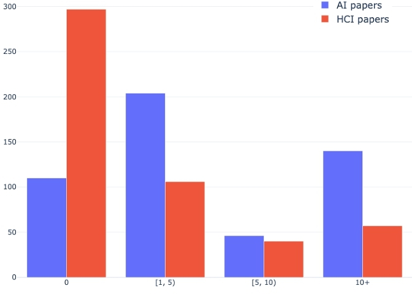
Figure 6 shows that 78% of AI papers and 40.4% of HCI papers are mentioned at least once on X. Around 30% of AI and 12% of HCI papers generate more than 10 discussion threads, comparable to the discussion volume of the reading materials in our usability study. Note that we intentionally chose papers with more discussions as the reading materials (i.e., at least 10 threads) to stress-test Surf. However, Surf does not necessarily require such high discussion volume to be useful, as its benefits mainly come from two affordances: overview threads and peer insights (Critique/Perspective/Q&A posts, hereafter “CPQ”) and we found that these benefits apply to a meaningful share of the literature:
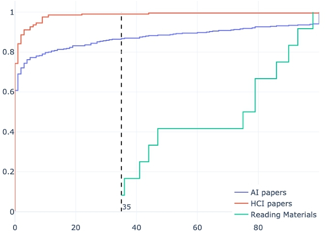
Among the tweeted papers, 52.1% (AI) and 55.4% (HCI) feature overview threads, enabling the guided exploration feature in Surf. For peer insights that enrich the reading experience, we found meaningful CPQ discussions in 39.2% of AI papers and 26.2% of HCI papers. Additionally, 50% of the AI papers and 70.3% HCI papers include posts from the authors themselves, allowing readers to communicate directly with the authors.
Figure 7 compared the cumulative distribution of CPQ discussion volume across the AI papers, HCI papers, and our usability study sample. AI papers exhibit a long-tail distribution (clipped at 100 posts for clarity), with about 15% of papers attracting comparable volume of CPQ discussions on par with our study materials. In contrast, in-depth CPQ discussions are harder to find among HCI papers, but readers can still benefit from the rather prevalent overview threads and easier connection with the authors and peers.
| Discussion Type | HCI | AI | Study Sample |
| Overview Thread | 7.04 | 4.96 | 5.26 |
| Q&A | 6.02 | 14.81 | 20.44 |
| Perspective | 5.75 | 9.33 | 7.94 |
| Critique | 0.91 | 2.96 | 3.69 |
| Related Work | 3.99 | 4.39 | 4.98 |
| Resource | 4.77 | 5.12 | 5.21 |
| Teaser | 23.68 | 14.77 | 12.64 |
| Trivia | 47.83 | 43.67 | 39.82 |
Table 7 reported the frequency of each discussion type. The AI sample is very similar to our study sample. Across all three samples, most tweets were classified as “Trivia” and “Teaser”, which is expected given the noisy and informal nature of social media. Q&A and Perspective tweets are also common, whereas explicit Critique remains rare, aligning with prior research that academic social media tends to be polite and collegial [2].
Overall, these findings support Surf’s potential for broad applicability across the AI literature. Even when in-depth peer discussions are limited (e.g., in the case of HCI papers), Surf remains helpful by aggregating the prevalent overview threads and author posts that help readers quickly grasp a paper's essence and connect with other peers and the authors more conveniently.
D Compliance with X's Terms of Service
This project fully adhered to X's terms of service13. All tweets were collected via authorized channels, ensuring full compliance with X's developer agreement14, rate limits, and all other operational guidelines. Tweets were presented in their original form, adhering to the official style, layout, and attribution requirements. Only a few additional elements were added, which do not alter or remove any original text, user attribution, timestamps, or any other relevant metadata. No modifications have been made that could alter or obscure the original content or its contextual meaning.
By strictly following X's terms of service, this project ensures that the integration of publicly available tweets within the research interface remains fully compliant with both legal requirements and ethical standards for academic research.
E Prompts used in Surf
Surf prompts an LLM for all the NLP tasks. To ensure the reproducibility and the quality of those tasks, we used the DSPy Python package15; here, we presented the signatures of the prompts we used for each of the tasks.
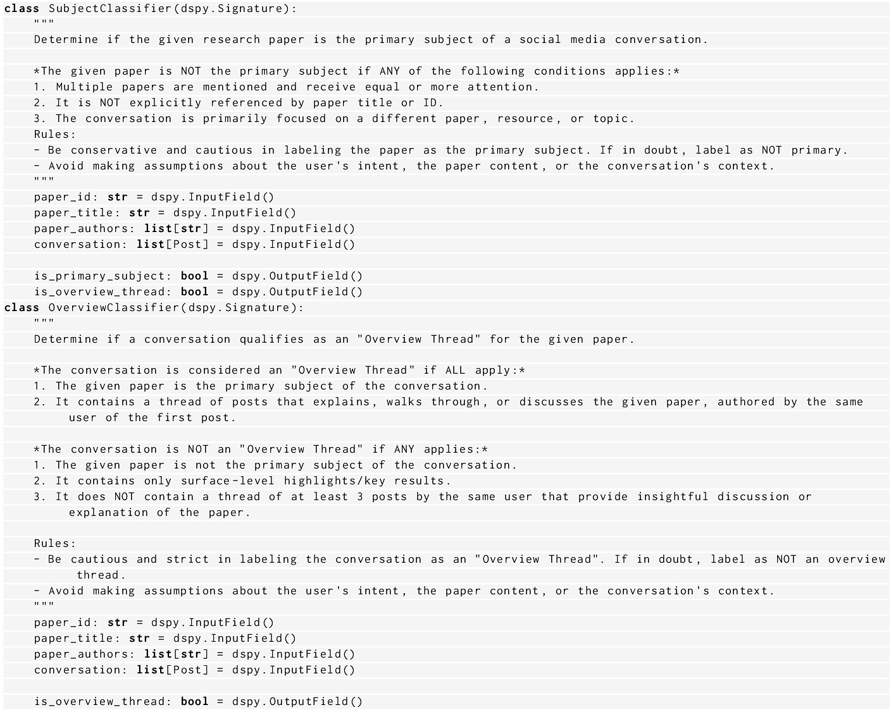
E.1 Filtering relevant discussions to the paper
Figure 8 shows the prompt signatures we used to determine whether a social media conversation is relevant to a given research paper. The classification process is divided into two steps using two separate prompts: SubjectClassifier and OverviewClassifier.
The SubjectClassifier prompt determines whether the paper is the primary subject of the discussion. It uses blacklisting criteria to conservatively reject conversations where the paper is either not explicitly referenced (by title or ID), mentioned alongside other papers that receive equal or greater attention, or overshadowed by a different topic. To reduce false positives, it uses a precautionary principle — if there is any ambiguity, the paper is not considered the main subject.
If the paper passes this initial filter, the OverviewClassifier then evaluates whether the conversation qualifies as an overview thread. This classification uses whitelisting criteria, requiring that all the following hold true: the paper must be the primary subject, the discussion must span at least three posts, and the same user must walk through or explain the paper in depth. Conversely, the thread is rejected (blacklisted) if it includes only superficial commentary, lacks continuity, or doesn't offer substantive engagement.
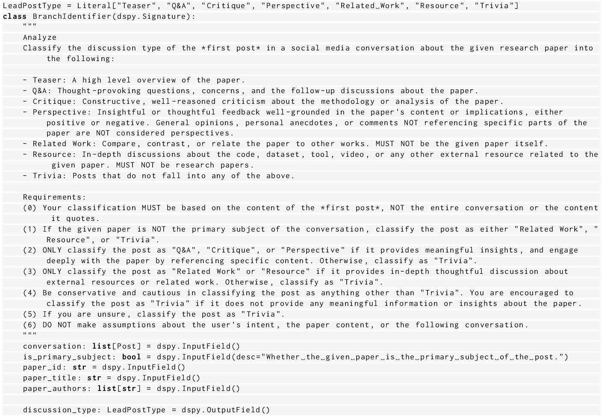
E.2 Classifying Discussion Type
Surf uses the BranchIdentifier prompt to classify the first post of each thread into one of seven discussion types: Teaser, Q&A, Critique, Perspective, Related Work, Resource, or Trivia (Figure 9). This classification is based solely on the first post's content and guided by the is_primary_subject flag from the previous step.
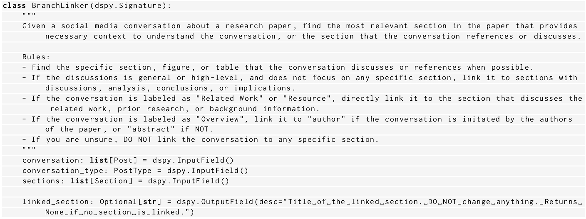
E.3 Mapping discussions to paper sections
In the next step, Surf uses the BranchLinker prompt to identify which section of the paper the social media conversation most likely references (Figure 10). Based on the conversation's classification from earlier steps, it applies targeted rules to guide section selection. If the post explicitly refers to a section, figure, or table, that part is directly linked. If the post is general or high-level, whitelisting rules link it to interpretive sections like discussion or conclusion. For conversations labeled as Related Work or Resource, linking is restricted to background or prior work sections. Overview posts are linked to the author section if written by the authors, or the abstract otherwise. If no meaningful link can be determined, the prompt defaults to returning no link.
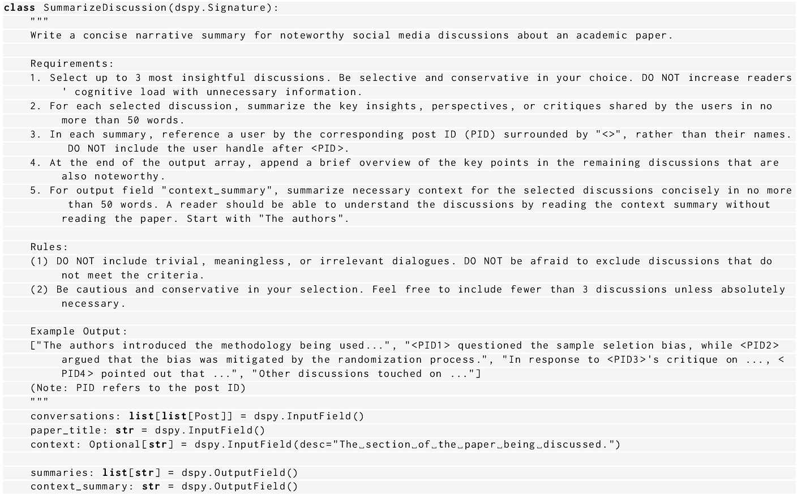
E.4 Summarizing discussions
In the summarization step, Surf uses the SummarizeDiscussion prompt to generate a compact narrative summary of conversations about the paper. This step selects up to three insightful threads and distills their key takeaways, referencing participants by post ID (PID) and limiting each summary to 50 words. The model applies blacklisting criteria to ignore trivial or shallow discussions and prioritizes quality over quantity—fewer than three summaries may be returned if warranted. Additionally, a separate context summary concisely introduces the key section or idea from the paper needed to interpret the selected discussions; this enables the readers to follow the conversation without reading the full paper.
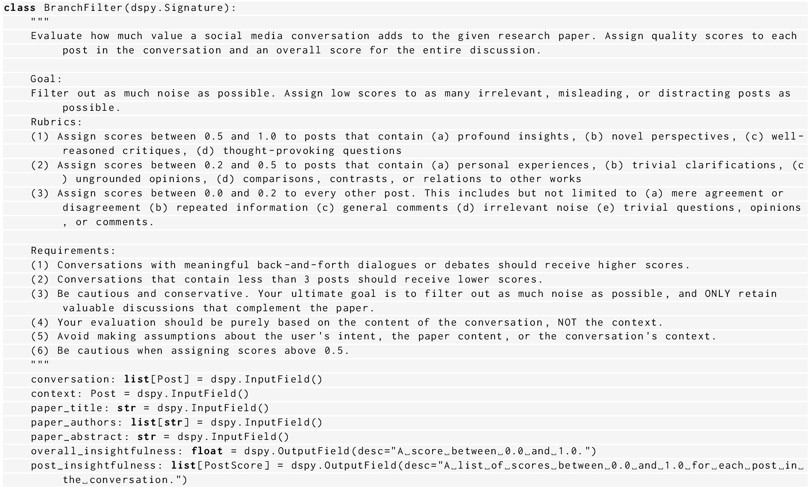
E.5 Evaluating discussion quality
To assess the overall value of each conversation, Surf uses the BranchFilter prompt to assign quality scores to individual posts and to the entire thread (Figure 12). This scoring is based on a tiered rubric: high scores (0.5–1.0) reflect posts with original insights, critiques, or deep engagement; mid-range scores (0.2–0.5) are assigned to lighter but relevant content, such as opinions or comparisons, and low scores (0.0–0.2) are used to blacklist noise, repetition, or off-topic remarks. The model favors longer, meaningful exchanges and penalizes shallow or short threads (fewer than 3 posts). It avoids inflated scores and applies filtering to ensure only high-quality conversations are retained. All evaluations are based solely on the textual content, without considering the user intent or external context/modalities.
F Pipeline Evaluation
We evaluated our multi-step pipeline against human-annotated datasets for each component. Using an evaluation set of 172 data points for Step 1 (Filtering) and 159 for Step 2 (Classification), the optimized prompts achieved accuracies of 88.40% and 89.94%, respectively. To assess Step 3 (Mapping), we asked three NLP experts to map 200 randomly sampled tweets from 5 papers to their corresponding sections. This yielded a moderate inter-annotator agreement (Krippendorff's α = 0.63) and a human upper bound of 0.82 using majority voting. The optimized prompt scored 0.78, comparable to human judgment. For Step 5 (Quality Assessment), the same three experts rated 100 randomly sampled tweets for quality, achieving strong inter-annotator agreement with Krippendorff's α = 0.773. The Mean Absolute Error between LLM predictions and human ratings was 0.11. Using the same threshold in the paper (> 0.7 indicates high quality, < 0.3 denotes noise), the optimized prompt achieved a weighted F1 score of 0.725. Overall, these results demonstrate that our LLM-based pipeline achieves satisfactory performance for our prototyping needs.
G Qualitative Analysis
The codebooks for formative study and usability study are attached in the supplementary materials.
G.1 Formative Study
Two researchers conducted thematic analysis on eight cleaned, de-identified interview transcripts of a formative study. Each interview was timestamped and coded, with results documented in the file Formative Thematic Analysis, across sheets labeled P1 through P8. Following each interview, the researchers iteratively refined the codebook. The final version is available in the CodeBook sheet of the same file. The CodeBook sheet is organized as tables with the following columns:
- Code: The qualitative code assigned to a segment of the transcript (quote).
- Frequency: The total number of times this code was applied.
- (P#, Frequency): Lists participants who mentioned the code, along with the frequency of each mention.
- Legend: Shows the meaning of each used color on codes
The final themes from the codebook are presented in different bordered boxes in the Themes sheet. Themes are identifiable by “Theme#” in front of them.
G.2 Usability Study
Two researchers conducted thematic analysis on cleaned, de-identified interview transcripts. Each interview was timestamped and coded, with results documented in the file Usability Thematic Analysis, across sheets labeled P1 through P18. Each of these contains both treatment and control sessions. Following each interview, the researchers iteratively refined the codebook. The final version is available in the CodeBook sheet of the same file. All sheets are organized as tables with the following columns:
- Code: The qualitative code assigned to a segment of the transcript (quote).
- Total Frequency: The total number of times this code was applied.
- (P#, Frequency): Lists participants who mentioned the code, along with the frequency of each mention.
- Number of P#: The number of unique participants who referenced the code.
- Example Quote: Sample quotes illustrating the code. This column is available in the RQ#:Themes sheets.
- Answers to: Appears only in the CodeBook sheet. It links each code to the relevant research question or notes if it pertains to discussion or future directions.
The RQ1:Themes, RQ2:Themes, and RQ3:Themes sheets each present a set of themes. Under each theme, associated codes and supporting quotes are listed to illustrate how participants’ responses reflect the identified concepts. (Themes are identifiable by “Theme#” in front of them)
Footnote
3 https://github.com/allenai/pdf-component-library
4 https://github.com/vercel/react-tweet
5We used the lme4 [5] and lmerTest [42] packages in R
7 https://ar5iv.labs.arxiv.org
14 https://developer.x.com/en/developer-terms/agreement-and-policy
This work is licensed under a Creative Commons Attribution-NonCommercial-ShareAlike 4.0 International License.
UIST '25, Busan, Republic of Korea
© 2025 Copyright held by the owner/author(s).
ACM ISBN 979-8-4007-2037-6/25/09.
DOI: https://doi.org/10.1145/3746059.3747647